Rules and errors English Grammar for Swiss studentsHEIA-FR - HEG-FR 2024/2025
Nouns and determiners
A noun is a word that refers to a
person, place, thing, or idea. Determiners are words that quantify or specify
nouns: they provide information about the number of a noun or about the
specific instance of a noun being referred to. Together, determiners and
nouns make up noun phrases. In the noun phrase many times,
times is the noun and many is the determiner.
The main difficulties in using nouns and determiners have to do with
the fact that a small but important set of nouns is uncountable, which
affects the way the noun can be used, particularly in combination with
determiners.
Nouns
Plural forms of nouns
The plural forms of most nouns is created simply by adding -s:
2 cars, 3 tables, 4 friends
Adding plural -s is one of the most basic facts of the English
language, yet it causes many problems with French speakers in
particular, because it conflicts with one of the basic rules of the
French language, which is that -s endings are usually silent.
By far the most frequent of all errors for native French speakers
(but frequently for Italian speakers as well) is forgetting to pronounce the plural -s.
Do not forget to
say the plural -s. Make a focused effort to pronounce -s endings clearly
and consistently. It should be one of your top priorities whenever you
do an English oral presentation. This error might seem trivial and
unimportant, but it has a big impact on the quality of your
communication.
Yet the plural is not always only a matter of adding an -s. Sometimes
a few additional changes must me made. This can affect the spelling and,
more importantly, the pronunciation of plurals.
Nouns ending in consonant +
-y
When a noun ends in consonant + -y, the ’y’ is transformed into -ie
before plural -s is added.
one baby
two babies
one party
two parties
Notice the difference when the -y is preceded by a vowel:
one boy
two boys
one display
two displays
As you can see, the -ies ending is only used when -y is preceded by a
consonant. This rule only affects the spelling of the word, not its
pronunciation.
Nouns ending in -x, -ss,-sh and -ch
we add -es instead of -s after words that end in consonants that
contain an /s/ sound. These consonants are -ss, -x, -sh, -ch, -ce and
-ge. This rule is not just a matter of spelling, however, as the -es
ending indicates a difference in pronunciation with respect to the -s
ending.
The reason why we add -es instead of -s is that -s sound are not
easily discerned when they follow another /s/ sound. Where does the
first -s end and the second begin? Adding a simple -s after an -x or an
-sh makes it impossible to distinguish the plural -s. This is why we add
-es (pronounced /iz/) instead.
singular
plural
pronunciation
one fox
two foxes
/foxiz/
one mass
two masses
/massiz/
one dish
two dishes
/dishiz/
one match
two matches
/matchiz/
one face
two faces
/feiziz/
one badge
two badges
/badgiz/
To repeat, the -es ending after x, ss, sh and ch is not a superficial
detail or just a question of spelling. The difference in spelling
indicates a difference in pronunciation. An -es ending after -x, -ss,
-ch, -sh, -ge and -ce should sound like /iz/, not like /s/.
The failure to understand this rule causes a lot of pronunciation
errors among French speakers, who often find it difficult or feel
uncertain when using plural forms such as masses, indexes, coaches,
crashes, pages or laces, and therefore choose to drop the plural
completely.
refers to the incorrect pronuciation of -es endings and is discussed
in more detail in [e1401]. Though actually the same as error
0110, we classify it separately because it has a particular origin in
the fact that pronouncing -s after consonants that sound like s,
including -ss, -x, -sh, -ch, -ge and -ce, requires a specific extra
effort to say /iz/ at the end of the word.
Irregular plurals
A few English words have irregular plural forms not ending in -s.
Figure 1.2 lists some of the most
common ones.
Note in particular that since men, women, children and
people are plural forms, it is erroneous to say mens, womens, childrens, and
peoples.
By the way, the word women is pronounced /wimin/, not /WO-men/
A note on the word person. As shown in fig. 1.2, the plural form for
person is people. Actually, the
plural form persons also exists; it is simply used much less
often than people.
Incorrect plural
form for an irregular plural. Not all plural forms are created by adding
-s. See fig. 1.2 for some of the most
important and frequently used irregular plurals.
Plural nouns
Nouns that only exist in plural form are called plural nouns. Plural
nouns should not be used in singular form.
Plural nouns refer to things that by definition exist in pairs or in
sets.
As you can see, these words appear in plural form by default. It
would be an error to say one
glass or a jeans.
Similarly, you cannot use plural nouns with the indefinite article
a, an, or any other determiners that would define them
as single units (such as each and every). We usually
describe these objects as pairs: a pair of pants, or simply
without quantifiers: glasses, scissors.
Architects should note that stairs, eaves, and French
windows are plural nouns. It would be wrong to say the stair or an eave or a French window.
Do not treat
plural nouns as single units. Avoid the singular form and/or using the
indefinite article (a, an) as well as singular determiners such as
each and every. Make sure the conjugation is not in
the 3rd person singular (the stairs
is… ), but in the 3rd person plural (the stairs
are…).
An important plural noun is data. Data can be considered a
plural noun because the singular form datum is practically
never used. As a plural form, data cannot be treated as a
single unit: you should avoid saying a
data or one data
(say the data, this data, data, a piece of data, etc.). In
particular, please note that the plural form datas does not exist! Data
itself is a plural form.
Rule: the plural form datas does not exist! Data
itself is a plural form.
English has a few other plural forms ending in -a. most of these are
Greek or Latin words that were integrated without modification into the
English language. They include criteria (singular form is
criterion); phenomena (singular = phenomenon);
bacteria (this is also the singular form). All of these words
ending in -a are plural forms, so a plural -s ending should never be
added: (bacterias, criterias).
Singular forms that end in
-s
These are words with -s endings in their singular
form! Despite their -s endings, the following words should not
be taken for plural forms!
a series: Frank completed one series of math problems.
a species: This species of frog is seriously endangered.
a means: Buses are an efficient means of transportation.
the news: The news is not good. >> Not "These
are bad news"!1
an analysis: The analysis was inconclusive. >> Not
"The analyse was
inconclusive."
economics: Economics is a booming academic field. >>
Not "Economics are..."
electronics: Electronics can be a challenging profession.
>> Not "Electronic can be
a challengig profession"
The names of other scientific and professional domains can be added
to this list, including maths, physics, mechanics, politics, aesthetics
and gymnastics.
A very common error is to remove the "-s" from these words, as if it
was a plural -s: "I am watching a good serie" or "I have a good new" or "I study electronic" or "Bicycles are the best
mean of transportation"…
Do not remove the
-s ending from a singular word ending in -s. The words in fig. 1.6 are already in singular
form despite their -s endings. The word serie, for example, does not exist.
Make sure you use singular conjugation (this TV series is
excellent).
In case you were wondering, the plural forms of series, species
and means are also series, species and means.
Compound nouns
Compound nouns are two or more nouns used together to mean one thing.
Some examples are a tennis ball; a bank manager; a road accident;
the building safety inspector. The important thing to remember
about compound nouns is that plural forms are generally avoided within
the compound noun; only the last noun can have a plural form.
Rule: The first noun(s) in a compound
noun is/are always singular, even when the meaning is plural
For example:
A building with 10 stories is a ten-story
building.
A journey that takes three hours is a
three-hour journey.
A course that lasts four weeks is a four-week
course.
A woman who is 30 years old is a 30-year-old
woman.
A letter consisting of six pages is a
six-page letter.
The reason for this rule is that the first noun or nouns in a
compound noun behave like adjectives: their job is to modify the second
noun. Adjectives in the English language do not agree with the noun they
modify, which means they are not used in plural form (see 2.1).
Do not use plural
forms inside compound nouns. Even when mentioning a plural number
(The house has 3 floors), we avoid the plural form inside a
compound noun (It is a 3-floor house, not a 3-floors house).
If you are wondering about the use of the hyphen or dash in a
compound noun, we use it to clarify which words are part of the
compound, and reflects the fact that the group of words is pronounced
faster than they normally would be. If you see 30-year-old in a
book, you will know that you can say it faster than 30 year
old. Use of the hyphen is not obligatory, however.
Sometimes we write compound words as one word (weekend), and
sometimes as two separate words (bank account). There are no
clear rules for this. If you are not sure, write two words.
Compound nouns are used extensively in English. Using compound nouns
usually results in more economical, and thus more elegant, language,
than when possessives or prepositions are used. In general, for
example,
the race car is more elegant than ’the
car for racing’
an ice-cream cone is more elgant than
’a cone of ice-cream’
the research institute is more elegant
than ’the institute of research’, or ’the institute for research’
Harvard Law School is more elegant
than ’the school of Law of Harvard’, or ’Harvard’s School of Law’
Rule: If you are building a phrase and
the use of a possessive ’s or preposition seems a bit complicated or
unnatural, ask yourself if you cannot simplify it with compound noun
Avoid using possessive -s (bridge’s
engineer) or a preposition such as of or
for (engineer of
bridges) if you can use a compound noun (bridge
engineer).
When identifying specific
types or kinds of nouns, the most elegant solution is often to use
compound nouns
Countable vs uncountable
nouns
Some nouns, like car or dog, refer to things that
are normally treated as units, or discrete objects. Discrete objects can
be counted, which is why these nouns are called countable nouns. We can easily say 2
cars and 3 dogs.
Because they can be counted,
countable nouns can be preceded by an indefinite article a
or an, or by the number one. Examples: one car, a
day, an idea
countable nouns can appear in plural form: two cars, a few days,
some ideas
The same cannot be said about another category of nouns that, like
water and salt, refer to things that are difficult to
imagine as discrete objects or units. Instead, Water and
salt are usually perceived as indivisible masses. This type of
word is called an uncountable noun, and
they follow the following rules:
Uncountable nouns exist in singular form (water, salt,
information), not in plural form (waters, salts, informations)2
Uncountable nouns cannot be preceded by a, an, or one, since
they cannot be treated as units (a
water, a sugar,
one information, etc.).
Uncountable nouns are often used in singular form but without an
article: Water boils at 100 degrees; Information is the
key.
They can be used with the determiners some, a lot of, a
little. Examples: Some oil must be applied, A lot of time was
needed, Add a little sugar, etc. See section 1.2.3 for more information on
these determiners.
Figure 1.10 presents the most
important and often-used uncountable nouns.
sets and bundles: furniture,
infrastructure, equipment, gear, bagagge, luggage
things in bulk: money, work, travel,
stuff, hardware
The essential uncountable nouns
It is a good idea to study this box carefully. But if you memorize
only three words from the box, take information, knowledge and
research, since their equivalent in French is countable (les
informations, les connaissances, les recherches), leading to
transfer errors.
Rule:information, knowledge and
research are uncountable in English: never plural, and never
treated as single units
To summarize, uncountable nouns can only be used in the following
ways:
in singular form (no -s): furniture, greenery
in singular conjugation: water boils, information is available,
knowledge was shared, glass doesn’t break
with determiners such as some, a lot
of and a little: some
information, a little work
Let us now review the restrictions that apply to uncountable nouns.
They are listed in connection with a specific error.
is caused by treating an uncountable word as a single unit by
preceding it with the word one, the indefinite article
a, or count determiners such as each and
every.. Remember that uncountable nouns cannot be used with
articles and other determiners that treat words as single units (an information, every furniture, one advice).
is caused by using an countabable noun in plural form. Avoid forms
such as the softwares, and
good knowledges of
Matlab. By the same logic, always avoid plural conjugations:
water boil, Information are available,
knowedleges were
shared, glass don’t
break.
refers to incorrectly using counting quantifiers such as
many and several with uncountable nouns. The problem
arises from the fact that these quantifiers treat words as multiple
units (many informations, several researches). See 1.2.3 for more information.
Uncountable nouns are notoriously difficult for learners of English
because of these restrictions as well as the fact that a few words that
are uncountable un English are perfectly countable in languages such as
French and German. Information and knowledge are the
two most important examples.
To help you to avoid some common mistakes with countable nouns,
figure 1.11 lists some of the the
countable alternatives to frequently used uncountable nouns.
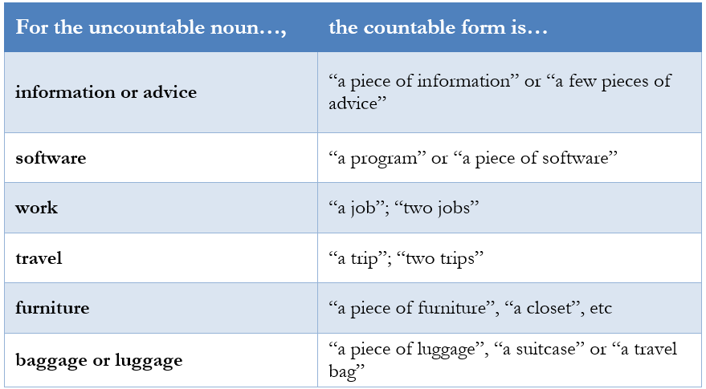
Countable alternatives for uncountable nouns
Determiners
Determiners are words that give information about the quantity,
real-world location, or distribution of a noun. You can think of them as
anchoring a noun in the real world (this fish) as opposed to
simply modifying the noun, the way adjectives do (red fish).
Determiners are usually part of a noun phrase as syntactical children of
a noun. As you can imagine, the properties of the given noun (plural
noun? countable? uncountable?) restrict the types of determiners that it
can combine with. We will discuss this in detail in the following
pages.
There are a few categories of determiners, including articles (a,
the), demonstratives (this, that, these, those), and quantifiers (much,
many, some, several, etc).
Articles
Articles are placed in front of a noun. They tell us if the noun is
definite (specific, already known) or indefinite (used in general, not
as a specific or previously identified instance).
The indefinite article a or an
The indefinite article a has a meaning
similar to one. For this reason, it should not be used with
uncountable and plural nouns, which cannot be treated as units.
It is called indefinite because it indicates that you are not
referring to a specific instance of the noun. A car is a
reference to any car, not to a specific one (as opposed to when you say
the car). Similarly, car is a reference to all cars,
or to cars in general.
The indefinite article a becomes an in front of words that start with a vowel.
This allows for a better flow of sound (known as a liaison):
an animal, an elephant, an island, an old man, an ultrasound, an
umpire
An exception to this rule are words beginning with u- when u- is
pronounced /iu/ instead of /uh/
a university, a unicorn, a uniform, a ukalele, a unique
person
The reason why we use a instead of an in these
cases is that the sound /iu/ makes liaison difficult with an.
Try it for yourself!
refers to the incorrect choice of a or
an.
Another common error with the indifinite article is related to the
pronunciation of the letter h- at the begining of words.
In English, the letter h is not
’invisible’ the way it is in French. The h- sound might be subtle, but
it is always pronounced: it is the sound of breathing out or exhalation.
For this reason, we do not use the article “an” to make a liaison with
words that start with h.
a hotelan hotel
a hillan hill
a helicopteran
helicopter
The sound of an h- in English is almost exactly the opposite of the
h- in French, which requires you to breathe in or inhale. This is why it
can be difficult for French speakers to pronounce English h- words and
to avoid liaisons with the article.3
Do not use an before a word starting with h-, such as
home or hotel. Remember that h- is makes a full
consonant sound that makes liaison with the vowel impossible.
The definite article "the"
The definite article “the” is used to refer to specific things, that
is things that are already known by the speaker or that have been
mentioned before.
the old house in my neighborhood is a specific house
the friend I told you about is an already-mentioned
person
the sun, the moon, the air, the sky are specific, well-known
bodies or elements
the Nile River, the Pacific Ocean, the Sarine are famous
bodies of water
Do not use the definite article the
when referring to things in general:
Old houses must be renovated. >> means all old houses
(don’t say the old houses
must...)
Steel is a useful material. >> means steel in general
(don’t say the steel is a useful
material)
Rivers must be kept clean. refers to all rivers (don’t say
the rivers must be kept
clean)
Oxygen is unstable. >> means oxygen in general (don’t
say the oxygen)
We also avoid using the with words for
ideas and abstractions such as beauty, time, evil, evolution,
nature, etc. Nature in particular can be difficult to use
correctly:
The project is in intense dialogue with nature (not "with the nature")
Avoid saying "the nature" when talking about nature in general–nature
as a concept.
Do not use the
definite article the with an object being
discussed in general. Instead, use the noun without any
article.
There is another common problem with the article the. In French, it is normal to use ’le’ or
’la’ in reference to a country: la France, l’Italie. In
English, we do this only when countries have plural names.
The Netherlands are playing the United States in
tonight’s rugby match.
It is incorrect (and a common error) to apply the definite article to
the name of a country whose name is not plural:
the Switzerland is beautiful,
the Spain is magical
You have to say Switzerland is beautiful and Spain is
magical.
We do not use the
definite article ’the’ with country names, except when the country has a
plural name (e.g. the Netherlands, the United States and the United Arab
Emirates)
Demonstratives
Demonstratives indicate the real-world position of a noun in relation
to the speaker. The choice of demonstrative is governed by two factors:
whether the noun is singular or plural, and whether the object is
(relatively) near to, or far from, the speaker.
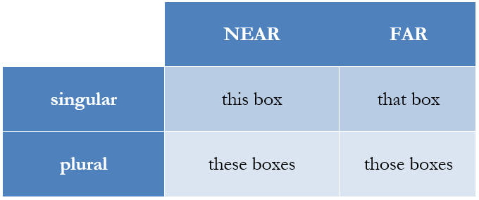
Demonstrative determiners
Examples:
This house (here)
That house (there)
These houses (here)
Those houses (there)
Just as we obviously should not use the singular demonstratives
(this and that) with plurals nouns such as
stairs, we should also avoid using plural demonstratives
(these and those) with uncountable words such as
information.
Incorrect choice
or use of a demonstrative determiner. Remember that we use this, that with nouns in singular form, and
these, those with nouns in plural
form.
Quantifiers
As the name suggests, quantifiers indicate the quantity of a noun.
Using quantifiers is sometimes difficult because they have to be
coordinated with the properties of the noun. Some determiners can be
used freely with nouns of any kind, but a few important determiners are
governed by clear restrictions.
Is the noun singular or plural?
Is the noun countable or uncountable?
Let us begin with quantifiers that can be used without
restrictions.
Quantifiers used
without noun restrictions
The following quantifiers can be used without noun restrictions, but
you often have to pay attention to other rules of usage.
A lot of
A lot of can be used with countable
nouns in plural form and with uncountable nouns in singular form.
Examples: I have a lot of money; He stole a lot of information; I
have a lot of friends; I have a lot of cars.
Some
Some can be used with both countable
(some cars) and uncountable nouns (some information).
Notice in the latter case that the uncountable noun remains in singular
form. Some is most commonly used in
positive sentences to indicate a positive quantity (I have some
bottles of water in my bag; I have some wine in the cellar). It is
also used in questions that make an offer of a positive quantity of
something: Would you like some wine? Would you like to take some
bottles with you?
Any
Any is often used in negative
sentences: Sorry, I don’t have any water; I didn’t receive any
messages. Note that it is ok to use any with a noun in plural form (I don’t
have any coins left); this is unlike the French grammar rule for
"pas de + nom au singulier". Any is also
commonly used in speculative questions: Are there any bottles in the
bag? Do you have any wine? A speculative question means that your
are not offering something concrete, but rather unsure if the what you
are asking for is even available. Finally, when any is used in positive sentences, it takes on
the meaning it doesn’t matter which; for example: You can
play any song you like.
This error happens
when any is incorrectly used by itself to
express negation: I can’t pay for Netflix because I have any money. Remember that
any is used in combination with negative
or question sentences.
No
No is used in positively conjugated
sentences to express a negation: I have no friends; I have no
money.
Incorrect use of
no in a negatively conjugated sentence.
Double negatives occur when a negative conjugation (I can’t
get) is combined with a negative determiner (no
satisfaction): I can’t get no satisfaction. This sentence
is grammatically incorrect. To avoid a double negative, we typically use
the determiner any in combination with a
negative conjugation.
These three quantifiers are complementary to each other. Some is used for concrete, positive things,
while any is used for speculative or with
negative conjugations to avoid double negatives (I didn’t see any
lions). No applies negation to a
positive conjugation: I saw no lions.
These rules also apply to pronouns formed by the suffixes -body, -one,
-where, -place:
Somebody bought a car - Did anybody buy a car? - Nobody bought a
car
It must be somewhere - I haven’t seen it anywhere - It’s nowhere
to be found
Some, any and no
Enough
Enough expresses that a quantity is
sufficient. It is used with both countable (enough days) and
uncountable (enough money) nouns. You can check the
pronunciation rule for enough in 14.6. The most important thing to
remember about enough is the following
rule:
Rule:enough is placed before
nouns, but after adjectives.
Examples: I have enough time to do this (enough + noun);
I am not strong enough to do this (adjective + enough).
Incorrect position
of the word enough. Remember that we place enough before nouns ("I have enough time") but
after adjectives (This isn’t good enough).
Determiners with noun
restrictions
The following determiners are restricted to nouns in either singular
or plural form and to countable or uncountable nouns.
EACH and EVERY
Each and every are always followed by countable nouns in singular form. Say:
every friend and every day, not every friends or every days. Each and every
quantify things as units (units within a group). For this reason, they
cannot be used with uncountable nouns such as equipment, infrastructure,
information, etc. But should we choose between ’each’ and ’every’?
Despite being very similar to each other, there is a subtle difference
of perspective involved in the choice. While ’Each’ focuses on the unit,
’every’ stresses the individual unit as belonging a group. Examples:
Each Lindt praliné is meticulously checked before being
wrapped. (= emphasis on the individual)
I do the same morning ritual every day. (=emphasis on the
repetition over a set of days)
In practice, this difference is admittedly difficult to explain and
defend. It is often possible to use each and every interchangeably, as
captured in the common expression each and every. Example:
Each and every audience member will receive a free set of Beats
headphones.
Remember that each and every have to be used with nouns in singular
form. The noun also has to be countable. Do not use every with plurals or uncountables: Every machines must be checked; Every information was
checked.
Use every with singular nouns: Every day is a
miracle.
SEVERAL
Several, like the French
plusieurs, is used with countable nouns in plural form only:
several weeks, several individuals, etc. Please note that
’several’ is by definition a plural determiner; do not add a plural -s
to ’several’ (severals)!
MANY vs MUCH
We use many with countable nouns in
plural form. Since many expresses
quantity in numbers, the noun it quantifies must be in plural form.
Remember that uncountable nouns by definition do not appear in plural
form.
I have many friends.
I don’t have many days to live.
In contrast, we use much with in
uncountable nouns, and usually in negative sentences:
We don’t have much time.
I don’t have much information on the subject.
In positive sentences involving uncountable nouns, it is far more
common to use a lot of: I have a
lot of dangerous information vs I have much dangerous information. On
the whole, it is relatively rare to use the determiner much by itself in this way.
TOO MANY vs TOO MUCH
These quantifiers signal excessive quantity. The
countable/uncountable restrictions described in the point above apply
here as well: many is used with
uncountable nouns, much with
uncountables.
COUNTABLE: I have too many friends. / I don’t have too many coins
left.
UNCOUNTABLE: There’s too much milk in my coffee. / I don’t have
too much time left.
Do not use many with an uncountable noun or much with a countable noun. Remember that many combines only with countable multiples of
things (many days), and much
only with quantities of masses (much time).
FEW vs LITTLE
Few and little indicate a small quantity of something.
They behave similarly to many-much: we use few with plural countable nouns: I have few
friends. In contrast, we use little
with uncountable nouns: I have little time left. Be careful not
to confuse the determiner little with the
adjective ’little’. DETERMINER: A little coffee, please = a
small quantity of coffee. ADJECTIVE: Oh, look, a little mouse!
= a small mouse.
The use of the indefinite article a or an in front
of few and little gives the phrase a positive
connotation. Omitting the article gives the phrase a negative
connotation. Examples:
I have a few good friends. I’m a lucky guy.
I have few good friends. It’s hard to find people I can
trust.
I have a little money. We can definitely go on a weekend trip to
Paris.
I have little money right now. I can’t come with you this
time.
Do not use few with an uncountable noun or little with a countable noun. Remember that
few combines only with countable
multiples of things (a few days), and little only with quantities of masses (a
little time).
BOTH, EITHER, NEITHER
The determiners in this trio are complementary to each other in much
the same way as some-any-no, as explained
in Fig. [some-any-no]. The difference is that
both-either-neither are used exclusively
with pairs or binomials; that is, they refer specifically to two
things.
BOTH means A and B
EITHER means A or B
NEITHER means not A and not B
Once again, use these words with two nouns. More precisely, we use
them with two countable nouns (entailed by the number two). In
other words, avoid saying both
informations or neither
furnitures. Examples: Both children are smart. Either
option is good. Neither team will make the playoffs.
When usingboth, either or neither with
noun phrases begining with an article (the kids), a
demonstrative (these kids), or a possessive adjective (my
kids), you need to include the preposition of. Examples: Both of them. Either of these
options is good. Neither of the rivals will make the playoffs.
To conclude this section, figure 1.24 summarizes the
restrictions that apply to quantifiers.
Quantifier restrictions
In the circle containing quantifiers compatible with countable nouns,
the number in the subscript indicates the number of objects required by
the quantifier.
Adjectives and adverbs
Adjectives and adverbs are modifiers, or words that modify other
words. Adjectives modify nouns. Adverbs modify verbs, adjectives or
other adverbs.
Basic rules for adjectives
The function of an adjective is to give information about a noun.
Rule 1: Position
Adjectives are placed before the noun: a red apple, the small
house. Contrast this with French and Italian, where the adjective
usually follows the noun: ’une victoire sublime’, ’une défaite
cuisante’
Remember that adjectives precede the noun they modify.
put the adjective before the noun: "That’s a fast car."
put the adjective after the noun: "That’s a car fast."
Rule 2: No declension
Adjectives are not declined for number or gender. In other words,
they never have a plural ending or a feminine form. Example:
English
French
German
a strong man
un homme fort
ein starker Mann
two strong men
deux hommes forts
zwei starke Männer
a strong woman
une femme forte
eine starke Frau
two strong women
deux femmes fortes
zwei starke Frauen
As you see in the absence of red-colored endings, in English the form
of the adjective never changes, and changes in the noun’s number and
gender have no impact on the adjective. Compare this to French, where
the adjective takes on four different endings depending on the
combination of person and gender. You can also compare with German (if
you are brave): in addition person and, not two, but three genders, the
grammatical case (nominative, accusative, etc.) has to be considered as
well, leading to more than a dozen different word endings for
adjectives!
Remember that adjectives precede the noun they modify.
leave the adjective unchanged in front of plurals: "There are two
fast cars in my garage."
add -s endings to adjectives: "I saw several reds cars in a row."
Numbers
Since numbers are words that usually modify nouns, we can think of
them as adjectives. Here we will recall a few basic rules about using
numbers.
PRONUNCIATION
Be careful with the pronunciation of numbers 13 to 19 on the one
hand, and 30 to 90 on the other:
13 /thir-TEEN/
30 /THIR-ty/
14 /four-TEEN/
40 /FOR-ty/
15 /fif-TEEN/
50 /FIF-ty/
16 /six-TEEN/
60 /SIX-ty/
It can be
difficult to distinguish between 13 and 30 if the -teen and -ty endings
are not pronounced carefully. The key is to place the stress on the
right syllable.
ONE HUNDRED
The number 120 is read one hundred and twenty, not hundred and twenty (do not forget the
’one’!). Similarly, say one thousand horses; not thousand horses.
When you read 100
or 1’000 in English, remember that you have to say ’one’. 100 is "one
hudred" (not hundred, and 1’000
is "one thousand", not thousand.)
NO PLURAL -S AFTER
HUNDRED, THOUSAND, MILLION
200 USD = two hundred dollars, not two hundreds dollars
5’000 soldiers is five thousand soldiers, not five thousands soldiers
10’000’000 tons is ten million tons, not ten millions tons
Why? This is related to point 2.1.b above: adjectives are never
modified.
We do not add an -s to the words ’hundred’, ’thousand’ or ’million’,
even if they follow numbers higher than 1. We do not use the preposition
"of" either.
say "500 hundred cars and 5 million dollars."
say "500 hundreds cars and
5 millions of dollars."
YEARS
Years are not read like normal numbers. To read out a year, divide it
in two parts:
1869 = eighteen sixty-nine
1999 = nineteen ninety-nine
2010 = twenty ten
The best way to read or ’say’ calendar years is to divide them into
two parts: 1884 is ’eighteen eighty-four’ and 2010 is ’twenty ten’.
say "nineteen seventy" (1970)
say "500 nineteen hundred
seventy or one thousand
nine-hundred seventy"
There are some special cases, however:
1800 = eighteen hundred
1900 = nineteen hundred
2000 = two thousand
2001 = two thousand and one
2009 = two thousand and nine
Adjective comparison
This section discusses rules for the formation of comparative forms
using adjectives.
Comparative and superlative
forms
Expressions with
comparatives
BETTER AND BETTER
We repeat comparatives to say that something changes
continuously:
Video card performance is getting better and better; The weather
is getting worse and worse.
THE MORE…, THE MORE…
We often use two comparatives to describe a correlation:
The more you risk, the more you leave behind
The more I learn, the less I know.
Come to the party, of course! The more the merrier!
The higher they rise, the harder they fall.
Compare this with the analogous French expression, for example:
Plus tu essaies d’oublier une personne, plus tu penses à elle.
Notice that there is no article (’le’) in the French expression, whereas
in English you need to say the + comparative …,
the + comparative …
English
French
the faster, the better
plus c’est rapide, mieux c’est
the more, the merrier
plus on est de fous, plus on rit
Intensified comparison
We can instensify a comparison by placing certain adverbs before the
comparative adjective.
A LOT, MUCH
We can place a lot and much in front of a comparative adjective to
make it more intense-sounding.
It is a lot easier to use; Oh, this is much better!; This is much
more convincing!
EVEN
The adverb even can also add emphasis
to a comparative: She finished the project even faster than
expected; It was even better than I thought. Using even expresses a feeling of surprise with a
result.
Equality
To say that two things are equal, use the preposition as + adjective + as ….
Your chances of winning are as good as mine; Superman is as fast
as a speeding bullet.
Intensifiers
Intensifiers make the meaning of other words stronger.
Such and so
SUCH
Such is used in combination with noun
phrases which typically include an adjective.
It was such a stupid story!
I had such a great time in Vegas that I feel like a new
person.
Liz and Joe are such nice, welcoming people.
I’ve never heard such nonsense!
In these examples, the red part is a noun phrase, i.e. a noun and an
accompanying adjectives and article. As you can see in the following
example, uncountable nouns (weather) do not have an
accompanying indefinite article:
We had such lovely weather in Portugal!
SO
So, on the other hand, modifies a
single adjective or adverb, not a noun phrase. Examples:
That was so stupid.
She’s so nice!
I’m so tired that I could sleep for days.
He ran away so quickly that he almost broke the door.
So can be used with nouns if it is
combined with the quantifiers much or
many:
I saw so many groundhogs in the Alps this summer. / We used so
many boxes! (’groundhogs’ and ’boxes’ are countable nouns)
There’s so much traffic these days. / We consume so much
information! (’traffic’ and ’information’ are uncountable)
Adverb intensifiers
ADVERB INTENSIFIERS
Adverbs can be used to intensify an adjective to different degrees:
quite, rather, pretty, very, highly, completely,
totally, entirely, thoroughly, super, incredibly, extremely, etc.
Examples:
This is highly recommendable; We are extremely lucky.
ADVERB DISTANCERS
The opposite of an intensifier is an adverb that “creates distance
from” an adjective to make it seem less strong, concrete or certain.
This includes adverbs such as relatively,
somewhat, fairly, rather, quite, pretty, mostly, etc. This type
of adverb is essential to scientific writing as it expresses a prudent
and careful attitude. Examples:
Results are mostly positive.; The project has been relatively
successful.; The discovery was somewhat surprising.
Often-confused adverbs
NEAR AND NEARBY
Near and nearby can be used as either adjectives or
adverbs, and they express the same thing: closeness.
My house is near. My house is nearby.
My cousin lives near. She lives nearby.
You can use either near or nearby without restriction as long as you do
not answer the question near where?. If you provide an object,
you have to use near, not nearby:
CORRECT: My house is near the station. My cousin lives near
here.
INCORRECT: My house is nearby the
station. My cousin lives nearby
here.
Notice that the prepositional phrase "near + a place" does not
include the word "to". It is a very common error to say "I live near to the lake".
Close and near are synonyms. The same
reasoning applies to the use of close and .
WELL
The adverb well indicates that an action is being done correctly:
Construction is advancing well. This is well done. I can read the
language well, but I’m bad at speaking.
If you are a German-speaker, be careful not to say ’good’ in such
situations (She played good).
For more details, see the top ten vocabulary errors at the end of the
book.
Well is also an adjective meaning “in good health”. This meaning of
"well" is similar to German “wohl”. You can say, for example: I feel
well, I am not well, Are you doing well? These holidays did me
well.
refers to the incorrect use of good instead of well. See ref for more
information.
HARD AND HARDLY
Hard can be an adjective or an adverb:
This is hard work (adjective modifying the noun ’work’)
I always work hard (adverb modifying the verb ’work’)
Hardly means “only a little” or “just
in a small way”. It can also be an adjective or an adverb depending on
how it is used.
This is hardly a meal. (adj) = This is only minimally a
meal.
I can hardly hear you. (adv) = I can hear you only
minimally.
necessarily where, fortunately
Temporal adverbs
AGO
Ago indicates how far in the past an action happened. The action has
to be complete, or finished: I obtained my degree ten years ago. I
got married 9 years ago. Ago is analogous to German “vor”. This
leads some students to incorrectly use English “for” instead of “ago”.
Be careful! (Don’t say I was born for 20
years.)
SINCE and FOR
These two adverbs have the same function: they help define durations,
i.e. periods of time. However, they are used differently. Since is used in combination with the starting
point of a period of time, while for is
used with entire period or duration. Examples:
I have lived in Rome since 1999. I have lived there for 24
years. >> 1999 is the starting point; 24 years is the
duration
It has been raining since yesterday. It has been raining for 24
hours straight. >> ’yesterday’ is the starting point; 24
hours is the duration
Since must be used with a period of
time that continues until the moment of speaking (the present). For can be used in such cases too, but it also
works with periods of time that are complete, i.e. finished in the past
(I worked as a policeman for 5 years, between 2004 and
2009.).
Do not use since a length of time (or
a duration). It is incorrect to say since 5
years or since 2
weeks. since is used with
the starting points for a duration. The preposition to use with a length
of time or duration is for:
.
Use since with starting points: since 2020
or since Tuesday
NEVER and EVER
Never is used to communicate the
complete absence of an action or event in the past, present, or future.
Example:
I have never been to France. (Je ne suis jamais allé en
France.)
This means the person has not visited France at any point in their
life.
Ever (un jour, quelquefois, jamais?)
is used to ask about or indicate the possibility of an action
or event happening at any time. It asks about the existence of the
action or event at an unspecified point. Example:
Have you ever been to France? (Es-tu déjà allé en France
?)
We see that this question asks if the person has visited France at
any point, without specifying when. This is not the same as stating the
absence of this event.
Another common error with ever is to
use it like always: I will ever love you
refers to the incorrect use of ever or never.
ALREADY and YET
We use already to confirm that something has happened: “It’s 9AM and
I’m already hungry.” “It’s 3 PM and Jonathan has already left.” “Don’t
get angry, I’ve done it already.” To ask if something has happened or
not, we use yet. “Have you done it yet?” “Are we there yet?” To say that
something has not happened, we also use yet. “I haven’t done it yet.”
“No, we aren’t there yet.” “Not yet.” As you can see, already and yet
are complementary in terms of what types of sentences (positive,
negative, or question) they are used in. Note: do not confuse German
jetzt with English “yet”.
STILL and ANYMORE
We use still to say that a situation
or action is not finished yet: I’m still working; He is still on the
phone.
A common error is to use always
instead of still.
To say that a situation has changed, we use a negative conjugation +
anymore or any longer:
Saul is not a lawyer anymore.
He doesn’t work here anymore.
I don’t want to stay here any longer.
Verb conjugation rules
The conjugated verb is the central element of the sentence.
Understanding and practicing conjugation rules is one of the most
important steps in learning a language. Fortunately for us, English has
relatively simple verb conjugation rules. What is conjugation?
Conjugating a verb simply means changing it to fit a specific subject
and a type of sentence. Conjugation gives clarity to the connection
between the subject (the agent) and the verb (the action). It also helps
communicate the intention of the speaker. There are two ways to change a
verb. These are illustrated in figure 3.1.
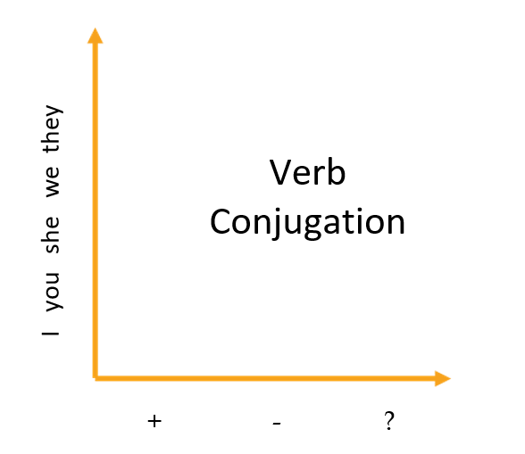
The two dimensions of verb conjugation
A verb conjugation is affected on the one hand by the person and
number of the subject. Changing the subject from ’I’ to ’She’ will
impact the verb in many cases. This is represented by the y-axis in
figure 3.1. On the other
hand, the speaker’s intention, as represented by the type of sentence
(declarative, negative, question) will also affect the verb conjugation.
Making a declarative statement, a negative statement of asking a
question will impact the position of the verb on the sentence. Each of
these aspects of conjugation follows a relatively simple set of
rules.
The components of a
conjugated verb
A conjugated verb has three main parts: the subject, the auxiliary
verb and the principal verb.
The subject is often represented by the subject pronouns I, you,
he, she, it, we, they, but in reality any noun can be a
subject.
The auxiliary verb (also known as a helping verb) is the part of the
conjugated verb that coordinates between the subject and the principal
verb. Because it has this function, the auxiliary verb is usually the
part that has to be modified in a conjugation, as we will see in the
next section. It is important to realize that there is a limited number
of auxiliary verbs. Auxiliary verbs are a closed category, which means
you cannot simple create a new one.
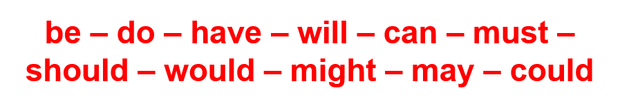
he auxiliary verbs
Each of these auxiliary verbs is involved in constructing a verb
tense or modality, as is explained in chapter 4. The last part of the
conjugation is the principal verb. This is the part that carries the
meaning of the action: anything and everything from jumping, running and
swimming to reading, thinking and dreaming. Pincipal verbs are an open
category, which means it is possible to create new ones if the need
arises. In recent years we have see the acceptance of the verbs to
vape, to dm, to ratio, to troll, to google, for example. Despite
the openness of the category, principal verbs are constrained in terms
of the forms they can adopt. Every principal verb has four basic
forms.
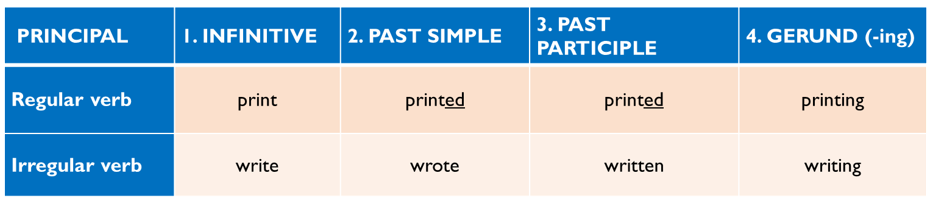
Four forms of principal verbs
These forms are used in combination with specific auxiliary verbs to
create verb tenses and modalities, as will be discussed in chapter 4. In
brief, we can summarize the role of each of these forms as follows:
infinitive: the ’purest’ form of the verb
past simple: expresses distance into the past and
separation from the present
past participle: expresses the idea of
completeness
gerund: expresses the idea of movement, of ongoing
process
These descriptions will make more sense after chapter 4. In this
chapter the goal is to understand the role each of these parts has in
conjugation.
Conjugating
according to person and number
Changes determined by person and number are expressed as word
endings, mostly “-s”, that are attached to the auxiliary verb. This can
be seen in the following table, which contains the most basic auxiliary
verbs:
For the verbs below we see that an “-s” ending indicates a 3rd person
singular conjugation. Sometimes the 1st person singular is also
marked.
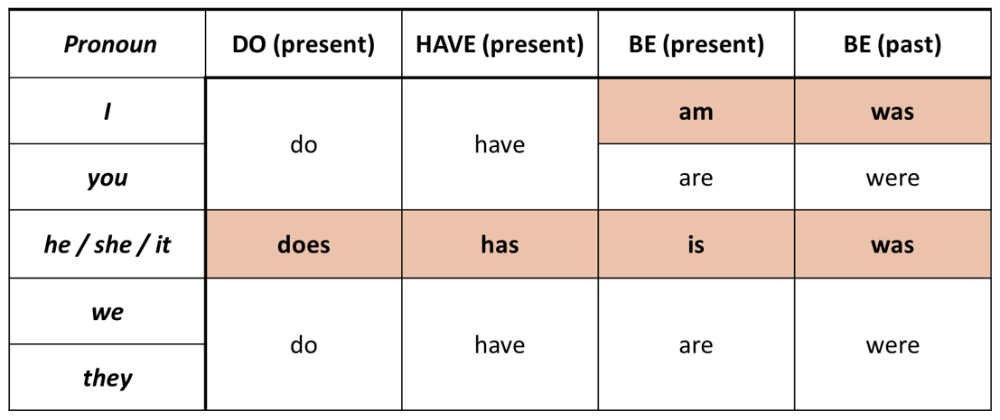
Basic auxiliary conjugations
It is one of the most important things you can do is to memorize
these simple conjugations. A lot depends on them. Not feeling sure about
these few verbs will keep you from conjugating correctly in all kinds of
situations; knowing them well empowers you to say all sorts of
things.
You are not able
to confidently use the present or past continuous because you have not
fully memorized the conjugations of the verb be. See fig. 3.4
add a table here with conjugations
Many auxiliary verbs, however, display no changes at all according to
person and number:
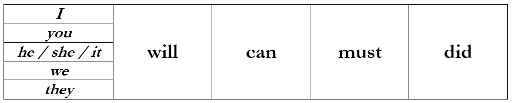
Unchanging auxiliaries
These auxiliary verbs are called undeclined because they do not
change according to person and number. Other undeclined auxiliaries are
“should”, “might”, “may”, “had”, “could”, etc. Because of this, it is
fair to say that English verb conjugation is quite simple. As we saw
above, in the present simple (Special case 1), the positive conjugation
contains no auxiliary verb; therefore, it is the principal verb that
changes according to person (3rd person singular).
The present simple
focus specifically on it
Do not forget to
say the -s ending in a 3rd person present simple conjugation.
Three sentence types
English verb conjugations consist of : A subject (S) + an auxiliary
verb (A) + a principal verb (P) In this order, they make a positive or
declarative conjugation, such as “I can dance”. If you insert “not”
between A and P, you create a negative conjugation: “I can not dance”.
To create a question, S and A are inverted: “Can I dance? Positive,
negative and question are the three types of sentence. These basic
formation rules applies to almost every English tense or modality, as
can be seen in the table below.
Standard pattern
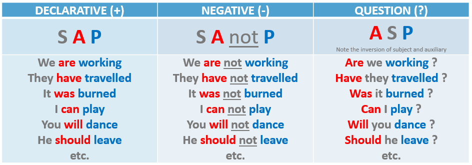
Standard conjugation pattern by sentence type
Exactly one auxiliary verb and one principal verb are needed for most
conjugations. Only in specific (advanced) cases do we use more than one
auxiliary verb or more than one principal verb in a conjugation. This
explains why it is a mistake to say: *We not go >> auxiliary
missing *He do not can go >> too many auxilaires (you only need
one) *He do not will go >> too many auxiliaries (you only need
one)
Do not forget the
standard pattern for negative forms is S A not P. It is incorrect to
make a negative without an auxiliary "we not go" or with more than one
auxiliary: we do not can go
Incorrect question
formation. Avoid using intonation to form questions (You will go? You can see?) The
standard question form is A S P?
Do not use the
preposition to between a modal auxilary verb and the principal
verb
However, not all of the tenses follow the above conjugation pattern
exactly.
Special patterns
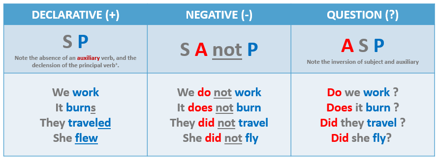
Special conjugation pattern: present and past
simple
Present simple
negative and questions use do as auixiliary and infinitive as the
principal verb
Do not use past
form in negative and question forms of the past simple
Unnecessary use of
do or did in a declarative conjugation
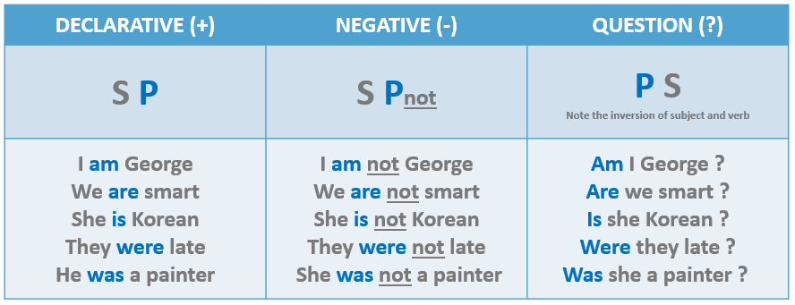
Special conjugation pattern: the verb ’be’
Do not conjugate
be present simple or past simple form with the auxiliaries do or did.
Remember that be follows a special conjugation.
Pronunciation of word endings
Present simple 3rd person “-s” endings become “-es” and are
pronounced /iz/ after “-ss”, “-sh”, “-ch”, and “-x”. Examples: • it
breaks, he sweats, she drinks, it burns, he destroys, she sells, etc /s/
• it crashes, he catches, she fixes, he passes /iz/
Past simple endings are normally pronounced /d/, but they must be
pronounced /id/ after “-t” and “-d” • they crashed, we sensed, he
tracked, you smelled, it passed, she banned /d/ • they printed, they
texted, you separated, she invented, we decided, you provided /id/
Verb tenses and modalities
In the last chapter, we reviewed the rules of conjugation that encode
both the intention of the speaker (declarative, negative, interrogative)
and the nature of the agent, that is the kind of subject that performs
the action.
This chapter deals with the difficulty of choosing the right tense or
modality to fit the situation. We have a variety of options depending on
the time (past, present, future) or type of interaction (permission,
obligation, recommendation, etc.) in our situation.
Tenses and modalities
Tense refers to the time of the action
(past, present, future). Modality refers
to the degree of obligation or force applied to the action by the
speaker (obligatory, probable, recommended, possible, etc).
We create tenses and modalities when we combine an auxiliary verb
with a principal verb. As we saw in REF, there is a limited number of
auxiliary verbs. The most important ones are be, do, have, will,
can, must, should, could, would, might and may. Principal verbs
potentially infinite in number, but they come in four forms (infinitive,
past simple, past participle and gerund), as shown in ref.
Choosing a tense or modality means combining one auxiliary with one
form of the principal verb. Fig. 4.1 shows the possible
combinations.
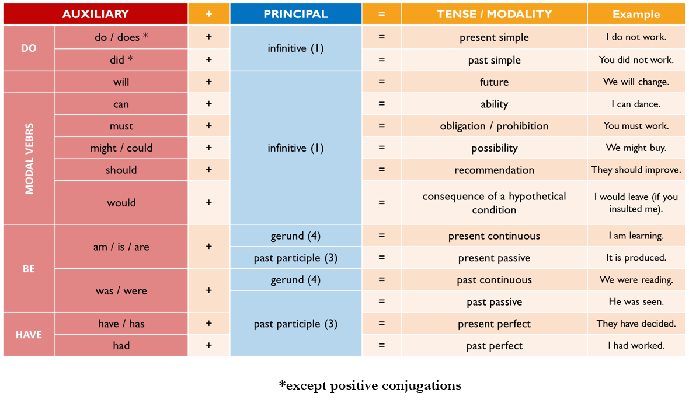
Combinations of auxiliary and principal verbs
as you can see, combinging will with infinitive gives us the future
tense, and combining the present form of be with gerund gives us the
present continuous.
Fig. 4.1 shows all the
possible combinations for the most important tenses and modalities. This
means that other combinations are not possible. It is incorrect, for
example, to combine can with gerund I can
going, or have with infinitive We have go.
refers to an incorrect combination of an auxiliary with a principal
verb, that is a combination that breaks the rules of the English
language. To repeat, only the combinations in fig. 4.1 are allowed.
In the next two sections, we will discuss how to choose the right
modality or tense.
Modalities
Modalities are composed of an auxiliary verb plus the infinitive form
of the verb.
auxiliary + infinitive = modality
Modalities give information about the degree of force in the social
interaction between the speaker and the audience.
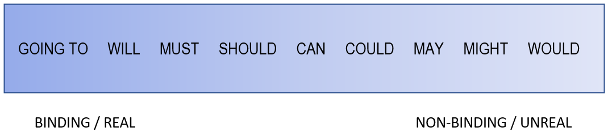
Modality spectrum
Overview of modal verbs
On one end of the spectrum, where there is a lot of force placed on
the interlocutor, we have obligation. On the opposite end, where there
is no force on the interlocutor, we have conditionality.
Fig. 4.3 shows the auxiliaries that
create modalities
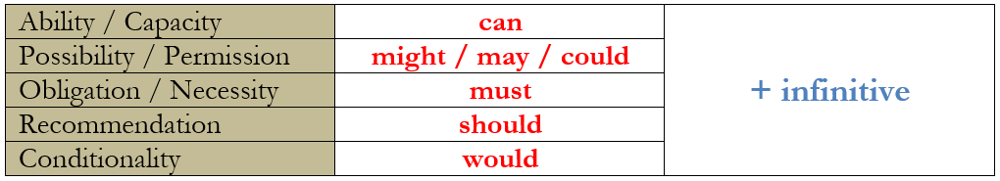
Auxiliary verbs per modality
MUST
Must expresses obligation or urgency:
We must solve this problem!. In negative conjugation, must expresses prohibition (You must not go
in there means You are not allowed to go in there);
however, it is more common to use cannot
to express prohibition.
Do not use do not have to + infinitive
to express prohibition: You do not have to
smoke in a hospital. Remember that Do not have to expresses lack of obligation:
I don’t have to go to work today; it’s Sunday.
For prohibition, use You can’t or You
mustn’t.
SHOULD
Should is used to make recommendations: You really
should try the gorgonzola; but you shouldn’t waste calories on
dessert.
CAN
The auxiliary can is used to describe
ability (I can dance) or to give permission Yes, you can go
now. In negative conjugation, it expresses inability (I can’t
do it!) or prohibition (You can’t talk to me like
that).
MIGHT
This auxiliary is used to express possible actions: I might buy
the new iphone, but I’m not sure. Might is usually
considered to be more speculative than could.
COULD
Could is also used to express that
something is possible (He could be a professional football player if
he wanted to.) Could feels more
realistic or plausible than might.
MAY
May is usually used to give or ask for
permission (May I go to the bathroom?; You may now kiss the
bride). But its use is somewhat old-fashioned. It can also be used
the same way as might to express
possibility I may just do it.
WOULD
Using Would is often called the
conditional, but more precisely it is used to describe not the condition
itself, but its consequence.
If I had more time, I would learn to play guitar. Joan would be
the best student if she only tried harder.
As we see in the examples, a hypothetical condition is usually
expressed in the past simple (if I had; if she tried). The result of
hypothetical conditions is what we conjugate as a modality with would (I
would learn; she would be).
error xxxx refers to using would for the conition rather than its
consequence
Using would has a distancing effect on the verb, making it less real.
This is why we use it to "soften" expressions of wants or desires,
making them more polite. I would like, I would rather
Many of these modale verbs have past forms. These are discussed in
chapter ref.
Modal verbs used rarely and not dicussed here include shall,
need.
want, will, would, would like
Tenses
Verb tenses are combinations of auxiliaries and principal verbs that
create a specific sense or concept of time. In some respects, choosing
the right verb tense is easy. For example, if you want to talk about the
future, choose "will + infinitive", and to evoke the past, choose the
past form of the verb. However, English has one or two nuances that
require a bit more thinking and practice. Why do we have more than three
tenses? We is present, past and future not enough? Why do we have a
present simple, a present continuous, and a present perfect? The answer
is that present is not nuanced enough. It is often useful and important
to also say if actions are complete or ongoing, if the time when they
happened is defined or undefined.
What the principal verb tells
us
An important thing to realize is the significance of choosing one of
the four forms of the principal verb.
infinitive: the ’purest’ or most general form of the
verb, with no information about its current state
past simple: places the action in a time frame
separate from the present, creating distance into the past
past participle: expresses a state of completeness,
but not necessarily in the past
gerund: expresses a state of movement, of ongoing
process
Understanding these meanings will help when you have to choose a
tense. It also explains why there are so many different tenses. For
instance, by choosing the type of principal verb, you can create a
future tense in which the action is in a finished state, and one in
which the action is ongoing.
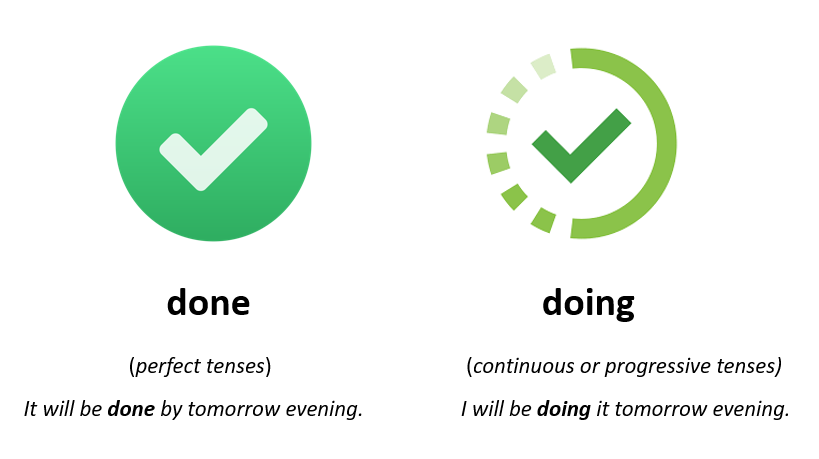
Many modalities and tenses use the infinitive form of the verb. These
verb forms refer to thhe pure meaning of the action, without giving
information about its current state. The continuous tenses used the
gerund form. They tell us that the action is ongoing or in progress,
whether in the past, the present or the future. The perfect tenses use
the past participle to express that the action is complete at a certain
point in time. In the present, it is called present perfect, in the past
it is past perfect, and in the future it is future perfect. Here we will
focus mainly on the present perfect, since its existence and use in
English cause considerable difficulties for learners. Finally the past
simple form is used to communicate that the action took place in a
specific past moment and creates distance or separation from the
present.
Present tenses
The present simple articulates actions in the general present. The
present continuous articulates actions in the immediate present.
Present simple
image, show conjugation
The present simple describes actions in the general present. These
are regular, repeating, or permanent actions: • regular actions: I go to
the gym every day. • permanent situations: The Queen resides in
Buckingham palace. • scientific truths: Water boils at 100 degrees. •
timetables: The train leaves at 10 AM. KEYWORDS: adverbs of frequency
are the most obvious indicators that the present simple tense should be
used.
Another important keyword for the present simple is every day.
Present continuous
image, show conjugation
The present continuous is also called present progressive, and this
is probably a better name for it. A verb conjugated in the present
continuous refers to a single action that is in progress in the present.
KEYWORDS: Indicators of the present continuous are adverbs that refer to
the immediate present, such as now, at the moment, today, currently, and
this week. Because the present continuous expresses the concept of the
immediate present, it is usually the correct tense to use when
describing actions appearing in pictures, which are single moments
frozen in time. However, a few verbs, called state verbs, are not
normally conjugated in the present continuous, not even in immediate
present situations. These include verbs for feelings (like, love, hate,
want, need, prefer, seem), mental activity (know, realize, suppose,
mean, understand, believe, remember), and ownership (own, belong,
consist, contain). State verbs refer to inactive states; for this
reason, they are difficult to imagine as actions in progress.
Present perfect
The present perfect is composed of the auxiliary verb have and a past
participle.
image show conjugation
as you can imagine from the choice of past participle, the present
perfect tells us that an action is complete in the present tense.
"The package has arrived". "I have finished the project". Using the
auxilary have in the present tells us we are dealing with the present,
not with the past. but using the past participle makes the action
complete. If you are thinking: "but if an action is complete in the
present, isn’t it a past action?", you are right This is why the present
perfect is a kind of hybrid, giving us information about the past but
only insofar as it is relevant to the present.
Rule: We use the present perfect to
focus on the value of past actions for a present moment. This is why it
is a hybrid tense
This is a difficult concept that has no analogue in French or German.
In french or german adverbs are used, but english has a dedicated
tense.
present perfect (I have done it) == French "Je le fais depuis" or "Je
viens de le faire" or "Je l’ai déjà fait"
I will now explain how the present perfect works in detail. But to
make it easy for you, before I do, here is the simplified diagram:
In French, present tense + depuis >> English present perfect
with since or for In French, expression "venir de" >> English
present perfect with ’just’ In French, passé composé with déjà >>
English present perfect with already In French, passé composé with the
meaning dans ma vie or dans ma carrière >> English present perfect
with in my life or in my career In French passé composé with
"jusqu’aujordhui" >> english present perfetc until today, or so
far
Only use the present perfect in these cases. Do not use it
otherwise.4
Now the details:
There is a second version of the present perfect. We use it when the
precise past moment in which the action happened is irrelevant,
unimportant or unclear. This is illustrated by the image below:
The first sentence and drawing are all about an action in the past:
it promises information about when, where and why you read the book (“I
read it during my beach holidays in Mallorca, it was awesome, I loved
it...”). All these things happened in the distant past. By contrast, the
second sentence and picture focus on the significance for the present
moment of having read the book. If you say, “I have read the book”,
you’re saying something like “I am well-prepared for the task at hand”
or “I am a reader, I am smart and well-informed about this subject.” You
are not drawing attention to the moment when you read the book; you are
focusing on the significance for the present moment of having read it.
If this seems like a very nuanced difference, I do not blame you.
However, the difference is real and usually obvious to fluent speakers
of English. Here’s another example: –“Have you done the research?”
–“Yes, I have done it. I am ready to start the experiment.” As you can
see, the present perfect (“I have done it”) is a way of mentioning the
past action only in relation to its significance now (“I am ready”).
There is no interest in knowing exactly when and how the action was
done. You would need past simple to talk about those details. KEYWORDS:
The adverbs just, already and yet are often used with this version of
the present perfect. Examples: • I have already done it. (You don’t know
when exactly, you just know that it’s done) • Have you done it yet? •
I’ve just taken care of it Already and yet are complementary to each
other. We use already in positive statements, and we use yet to ask
questions or in negative statements.
In one version of the present perfect, the time frame in which the
action takes place is not closed or finished (the period of time started
in the past and continues until the present). In the example above, the
period of time that began in the past is not yet finished (“since
1999”). The action of “living in Rome” takes place in a period of time
that began in the past and continues today. KEYWORDS: This concept of
unfinished past time is created by the prepositions since / for, and by
the adverbs recently/lately and expressions like this year. Also, when
talking about your life as a whole, we usually use present perfect.
Examples: c) Where’s Rob? I haven’t seen him recently. d) I’ve been to
the cinema 5 times this year. e) I have never been to China (in my
life). Now a note on SINCE vs FOR. These two adverbs mean the same
thing, but they are used differently. “Since” is used with starting
points (such as 1999, last week, etc.), while “for” is used with periods
or duration (20 years, 5 months, etc.). Example: • I have lived in Rome
since 1999. I have lived there for 20 years.
Past tenses
Past simple
The past simple expresses a concept of past time that is definite and
finished. We say it is definite because we can always say when the
action happened (yesterday, last week, 3 years ago, etc). We say that it
is finished because the time in which the action happened has ended.
Example for the sentence “I visited Rome in 1999
As you can see, the two boxes above, representing the time of the
action and the time of speaking, are unconnected. In other words, the
time of the action has no connection to the present. The entire focus is
on a time in the past. KEYWORDS: The following adverbs are associated to
a past time that is definite and finished: yesterday, last week, ago, in
+ year.
Past continuous
We use the past continuous to describe a single action in progress in
the past. Often, the past continuous action is used to create a
circumstance or background for an action in the past simple. Example: •
I was running along the street when I noticed a cat stuck in the tree. •
She was watching television when the tsunami hit. NOTE: We do not use
past continuous for repeated actions in the past: *I was often going to
Disneyland when I was a kid. For an action to serve as the background of
another, it must obviously have some continuity or duration over a
length of time. Instantaneous actions are not usually conjugated in the
past continuous. It makes no sense to say: *the window was breaking when
I was working; or *the rock was hitting the car, because “to break” and
“to hit” are not actions that normally have duration.
“used to + infinitive”
For repeated actions in the past, such as—for example—our daily
routines when we were children, we can simply use the adverb “often”: “I
often visited Big Bear as a kid.” We can do the same thing using the
expression “used to + infinitive”. Example: “I used to visit Big Bear
when I was a kid”. Using "used to" lilke this usually means that you no
longer do the activity.
Please note the correct negative and question conjugations of “used
to + infinitive”. The conjugated verb is "use" • I didn’t use to play
basketball. not *I didn’t used to • Did you use to watch Sesame Street?
not *Did you used to
Finally, we can also use “would” to express the idea of a repeated
action in the past: “We would go to Big Bear every summer.” Remember, we
do NOT use the past continuous for repeated actions in the past: *We
were visiting Big Bear every summer during my childhood.
past perfect
We use the past perfect to talk about actions that took place before
other past actions. Examples: • They had already eaten when they
arrived. • He was unable to access the safe because he had lost the code
Note : the past perfect is used in very specific cases, usually in the
context of a story or narrative to set up the background for a past
simple action. It is almost never the main narrative tense in a
story.
Creating narratives
Future tenses
We use future simple for future actions in general.
You can use the future tense to express a strong intention, such as a
promise. But by saying "will" you making the future more personal and
less objective.
If you want to say that an action is definitely, objectively taking
place, we use present continuous
We typically do this when you have a plannned apointment or
meeting.
We can use present simple tense to talk about future events that take
place mechanically and with near certainty. This is typically the case
with timatables and schedules. The lesson begins at 8, the train departs
at 9.
The future has continuous and perfect forms that describe an action
in progress in the future ("We will be doing this for the next three
months") or an action in a state of completeness in the future ("We will
have finished by end of July".)
Past modals
Should and could
The past forms of the modal verbs “should” and “could” allow us to
criticize past actions and situations. They are useful when making a
self-evaluation, for example.
The past form of these modal verbs consists of:
Should/could + not + past
participle
Fig. 5.1 demonstrates how to
create the past form of should and could.
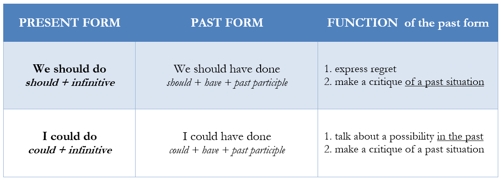
Past form of should and could
In negative sentences, the negative particle not is placed after should/could:
Should/could + not + past
participle
Example: We should not have done that
Note that the third person singular conjugation with ’he’, ’she’ or
’it’ does not require an -s ending. It would be incorrect to say He should has done better, for
example.
Might and must
The past form of might and must is also made by adding have and the past participle:
These forms are used to make deductions or guesses about past events.
Example:
- Where is Joe? - I don’t know. He must have gone out for a
smoke. Or he might have gone home.
In the second example, notice that the past form of must is not being used to express obligation in
the past. The conjugation must have left is making a guess, not
describing an obligation.
Obligation in the past and
future
To describe obligations in a past situation we cannot use must. Instead, we use the expression have to + infinitive. Example:
I had to drive my sister to the hospital yesterday.
The same rule applies to future time. An obligation in the future can
be described as follows:
Oh no, I forgot to buy salad! I will have to go the supermarket
again.
Rule: Use have
to + infinitive to describe obligations in the past or future. Do
not use must in the past or future.
Will
As you know, will + infinitive is used
to talk about the future: I will finish my degree next
year.
It is sometimes necessary to talk about the future from the
perspective of the past, especially when telling stories or reporting
information. Example:
…and the policeman said that [he will let me go this
time].
In this example we have a future action (“he will let me go”) as seen
from inside a past situation (“the policeman said”). In cases like this,
we have to replace ’will’ with would, as
follows:
…and the policeman said that he would let me go this
time.
To put it simply, the past form of the auxiliary verb “will” is
would.
Rule: Use would when describing a future action in the
past
Can
To make the past of can, we simply
replace it with could:
I could dance well when I was young.
Could is used to describe abilities in
past situations. You can also use do this with the expression be able to: I was able to dance very well
in my youth.Be able to also allows
you to describe abilities in the future: By the end of my bachelor’s
degree, I will be able to manage infrastructure projects. This is
not possible with the auxiliary can:
I will can manage projects.
Logical connectors
Logical connectors are words that help to organize language into
coherent arguments. They communicate the ways in which one idea can lead
into another. In terms of parts of speech, logical connectors are
conjunctions, adverbs or prepositions.
Logical categories
Connectors can be organized into five logical categories: sequence,
cause and effect, comparison, expansion, and counter-expectation. As
explained below (6.2), connectors that are followed by a noun phrase are
marked blue, and those
that are followed by a subordinate clause are marked green. Sentence modifiers are
marked red. This
is easily the largest group. Most sentence modifiers are separated from
the rest of the sentence by a comma.
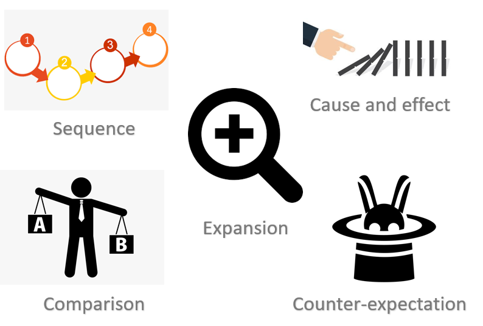
Categories of logical connectors
Sequence
This is also before-and-after Sequence connectors create a sequential
order.
First, secondly, next, then, after that, finally, in addition,
furthermore, in conclusion, to summarize, to sum up • First (Firstly), /
Second (Secondly), / Third (Thirdly), • Next, remove the toner
cartridge. • Finally, add salt and pepper. • In addition, / Furthermore,
the pump must be descaled regularly. • In conclusion, / To summarize, /
To sum up, this is a great investment opportunity.
Cause and effect
Cause and effect connectors create relations of cause and effect, or
reason and result.
CAUSE
The concepts of REASON and PURPOSE can be included under CAUSE. These
are the most important CAUSE connectors. because, because of, since, as,
given that, owing to, due to, with the aim of, (in order) to,
considering • Owing to a lack of water, the tanning industry has been
forced to shut down. • The interactive part of the program has been
cancelled due to low audience participation. • Since there is no more
water, the tanning industry has been forced to shut down. • We ask you
to stop watering your plants as there is little water left in the
reservoirs. • The bridge design was modified with the aim of reducing
wind drag.
EFFECT
The concept of RESULT can be included under EFFECT. These are the
main EFFECT connectors. as a result, therefore, consequently, because of
this, thus, so • The market is changing. As a result, we have decided to
increase our investment in research. • The market is changing.
Therefore, we have decided to increase our investment in research. • The
market is changing. Consequently, we have decided to increase our
investment in research. • The market is changing. We are thus going to
increase our investment in research. (*no comma needed after thus) • We
have had a bad year financially, so we cannot afford to donate more.
(*no comma needed after so)
Comparison
Comparison includes logical relationships of similarity or
contrast.
SIMILARITY
and, also, too, as well, similarly, in the same way, likewise •
Herons live in the northern United States and in most of Canada too. •
Herons live in the northern United States and in most of Canada as well.
• In the USA, New Yorkers are known for working hard. Similarly,
Londoners are reputed to be among the hardest-working Brits. •
Kentuckians are likewise some of the friendliest people you’ll ever
meet.
CONTRAST
but, in contrast, by contrast, on the other hand, alternatively,
while, whereas, unlike • Herons are opportunistic hunters but seagulls
depend almost entirely on sardines. • Herons are opportunistic hunters.
In contrast, seagulls depend almost entirely on sardines. • John studies
hard the night before his exams; Ralph, on the other hand, prefers to do
his preparation earlier. • While Volkswagen has been tremendously
successful, Chevrolet is going through an internal crisis. • Fribourg is
bilingual, whereas Bulle is monolingual. • Unlike my colleagues, I am
going to work hard for the exam.
Expansion
There are four ways in which we can expand on an idea.
BE MORE SPECIFIC
ADD DETAILS that is, in other words, : (colon), which is to say, In
fact, Actually, As a matter of fact, Concretely, More specifically, In
particular • Bill is a black belt karate fighter, that is, he has
reached the highest level of mastery of his discipline. • Some birds are
perfectly adapted to their environment. In other words, they possess
specific hunting and locomotion strategies to live in local habitats. •
John is a complete fighter, which is to say, he has all of the necessary
skills, experience, physical strength and wisdom. • John is a complete
fighter: he has all of the necessary skills, experience, physical
strength and wisdom.
ADD ARGUMENTS
this is another way to expand. very similar to creating a sequence
furthermore, in addition, moreover • Cockroaches can withstand high
levels of radiation. Furthermore, they can endure extreme weather
changes. This makes them the ultimate survival machine. • We will lower
taxes to make our state more attractive to multinational companies. In
addition, we will create job programs for the unemployed. • His report
was poorly written and, moreover, it had no real substance. Note:
furthermore and in addition are used when you only add one more reason
or argument to those mentioned before. Moreover is used to add a reason
or argument of a different kind. In practice, it is not always easy to
make this distinction.
EXEMPLIFY
for example, for instance, such as, including • Berlin is a lively
city. This weekend alone, for instance, more than 300 concerts are
taking place. • When fish are not available, seagulls will eat other
things, such as crustaceans, mice and even smaller birds. • This
smartphone has several revolutionary features; including facial
recognition, smart object tracking, and a bezel-less foldable
screen.
GENERALIZE
in general, more generally, overall, on the whole • Early primates
were able to transition from forest habitats to the savannah. More
generally, they proved capable of adapting to almost any environment
they encountered for the next 40’000 years.
Counter-expectation
or exception These connectors introduce exceptions or unexpected
information (in relation to an earlier statement). This type of logical
relationship is very useful rhetorically, as it creates a feeling of
surprise or unexpectedness. however, on the other hand,
nevertheless/nonetheless, still, although (even though), while, then
there is, yet, and yet, despite (in spite of) a. Unexpected information
or exception after a statement: o Winters in the North Pole can seem
endless. Still, a few creatures manage to thrive here. o These vents at
the bottom of the ocean offer no possibility of survival to aerobic
organisms like fish and mollusks. Anaerobic bacteria, on the other hand,
thrive here like nowhere else. o Although it’s raining, I will go
outside. o In spite of the danger and risks, I will climb this mountain.
o Geneva is a very interesting metropolis. However, the cost of living
there is high. o Geneva is a very interesting metropolis. The cost of
living there is high, however. o The weather will be mostly dry and
sunny, yet we cannot entirely exclude the possibility of summer
thunderstorm. b. Unexpected information or exception before a statement:
o I will go outside despite the rain. o I’ll have to eat something
although I’m not hungry. o This winter has been terribly cold. However,
winters in Spain are usually mild and pleasant.
Note: the connector however shouldn’t be confused with the adverb
meaning “in whatever way”:
• LOGICAL CONNECTOR: I am very hungry. However, I refuse to eat. •
ADVERB meaning “in whatever way” or “it doesn’t matter how”: o However
you look at the situation, there seems to be no solution. o However
grumpy and unfriendly your cat is, you have to keep it and take care of
it. o However much you saved on that computer, in my opinion you wasted
your money.
Syntactical types
Now that we have seen the five logical categories, we can focus on a
few rules that govern how connectors are used in a sentence. There are
three main types: connectors followed by a noun phrase, connectors
followed by a subordinate clause, and sentence modifiers. For
convienvience I have labelled these as the blue, green and red groups
respectively.
Blue group: add a noun phrase
The following connectors are complemented by a noun phrase. A noun
phrase refers to a single noun plus any dependent words it might have,
such as adjectives, determiners and relative clauses. despite, in spite
of + NOUN PHRASE during because of owing to due to according to thanks
to unlike
Examples: • Our picnic will take place despite the heavy rain • You
called during my lunch hour. • The tournament was cancelled due to the
huge storm that hit the region.
IMPORTANT: noun phrases do not contain a subject + conjugated verbs!
Note: after despite / in spite of, it is possible to use a gerund verb
phrase: • I played the entire match despite feeling ill. (the fact that
he felt ill) • In spite of being tired, Harvey will go out tonight. (the
fact that he is tired)
In these cases the gerund verb appears without a subject, is
unconjugated, and behaves like a noun.
Green group: add a
subordinate clause
Some connectors introduce a subordinate clause (a clause or sentence,
i.e. subject + predicate, that depends on a main sentence). These
connectors are not separated from the subordinate clause by a comma.
Examples: • Although I am very tired, I will work another hour. • Since
you mention it, let’s talk about the timeline. • I finished up the
housework while you were out shopping.
Here are some of the most often used logical connectors that
introduce a subordinate clause: although, even though, though +
SUBORDINATE CLAUSE while whereas since (reason) as (reason) because
Red group: sentence adverbs
These connectors modify an entire clause or sentence without
introducing a subordinate clause. They constitue the largest group. •
Furthermore, I would like to propose an entirely new code of ethics. •
In conclusion, the MacBook Air is the finest laptop ever produced. •
John changed his style in clothes, but he didn’t change his lifestyle
habits, however. Most sentence adverbs are separated from the clause
they modify by a comma. These connectors are similar to comment adverbs,
which make a comment on an entire clause or sentence, and are separated
from the sentence they modify by a comma. Examples of comment adverbs: •
Fortunately, we didn’t lose our investment. • Sadly, that was the last
time I ever saw her. Other sentence adverbs, however, are never or not
always followed by a comma. These include first, second, (etc.), then,
after that, also, too, so, thus, yet. • First you chop the onion, then
you fry it in butter. • I was tired of my old life and felt full of
energy to try something different. Thus I decided to start a new career.
• This is what you wanted, so you shouldn’t complain.
Case study: DESPITE,
ALTHOUGH, HOWEVER
The three ways in which connectors are used in a sentence are
exemplified by “despite”, “although” and “however”. These three
connectors have a similar meaning (counter-expectation, or contrast),
but they are different grammatically, as can be seen in the example
below. • Despite the heavy rain, the match will be played according to
schedule. • Although it is raining heavily, the match will be played
according to schedule. • It is raining heavily. However, the match will
be played according to schedule.
How to structure an
analytical text
List arguments with examples
Transitions
Weigh both sides
Draw conclusions
plus: - make recommendations - explain condigionts (unless, as long
as, if, if not, provided) (qualify your opinion)
Sentence structure
Basic structure: SVO
The normal order of a declarative sentence is S V O: S V O = Subject
+ Verb(s) + Object Examples: • I like my job • Our guide can speak
French The most important thing to remember is that V and O (verb and
object) always stick together; we do not usually put other words between
them. This means that any adverbs that modify the verb go after the
direct object. • Say: “I like my job very much” (not *I like very much
my job) • Say: “Our guide spoke French fluently” (not *spoke fluently
French) In other words, you should answer the question “What?” before
you answer the question “How?”
Rule: After a transitive verb, answer
the question what before the question how. Avoid modifiers between the
verb and its object (I speak fluently
French).
The direct object is often followed by circumstantial information
about time and place. When this happens, time usually goes after place:
• Ben walks to work every morning (not *every morning to work) • Sam has
been in Canada since April (not *since April in Canada) In other words,
you should answer the question “Where?” before “When?” In conclusion,
declarative sentences usually give information in the following order:
What? Where? When? The boy scouts picked mushrooms in the forest this
morning. Subject + Verb + What? +Where? + When? Adverbs that answer the
question How? can be inserted in differnt parts of the sentence, but not
between the verb and its direct object: • The boy scouts picked
mushrooms slowly in the forest. CORRECT • The boy scouts slowly picked
mushrooms in the forest. CORRECT Not *The boy scouts picked slowly
mushrooms in the forest.
Transitive vs intransitive
verbs
Transitive verbs are verbs that have a direct object. The verb bring,
for example, cannot form a complete thought without an object. In other
words, you have to say what you bring. Intransitive verbs are verbs taht
do not have a direct object. The verb laugh, for example, is used
without an object: I laughed out loud. Often, verbs can be transitive or
intransitive: I sang the anthem (transitive); I sing well
(intransitive)
The reason this matters is to be careful with verb pairs one is
transitive the other intransitive. The verb rise, for example, which
means to go up or to move up, is always intransitive: the sun rises. The
related verb raise, has a similar meaning applied to a direct object: to
move something up, to lift something: The canton raised taxes. It is
sometimes difficult to remember which verb is which. Here are common
pairs
rise raise lie lay speak say fall drop
Ditransitive verbs
"Verbs that usually require an indirect object before the direct
object are often referred to as **ditransitive verbs**. These verbs
typically take two objects: an indirect object (usually a person) and a
direct object (usually a thing). The indirect object usually comes
before the direct object in the sentence structure.
Here are some examples of ditransitive verbs:
1. **Tell**: - Correct: S̈he told him the story.-̈ Structure: [Subject]
[Verb] [Indirect Object] [Direct Object]
2. **Give**: - Correct: Ḧe gave her a gift.-̈ Structure: [Subject]
[Verb] [Indirect Object] [Direct Object]
3. **Show**: - Correct: T̈hey showed us the way.-̈ Structure: [Subject]
[Verb] [Indirect Object] [Direct Object]
4. **Send**: - Correct: Ï sent them a letter.-̈ Structure: [Subject]
[Verb] [Indirect Object] [Direct Object]
5. **Lend**: - Correct: C̈an you lend me a pen?-̈ Structure: [Subject]
[Verb] [Indirect Object] [Direct Object]
6. **Offer**: - Correct: S̈he offered him a job.-̈ Structure: [Subject]
[Verb] [Indirect Object] [Direct Object]
7. **Teach**: - Correct: Ḧe taught the students a lesson.-̈ Structure:
[Subject] [Verb] [Indirect Object] [Direct Object]
8. **Buy**: - Correct: S̈he bought him a present.-̈ Structure:
[Subject] [Verb] [Indirect Object] [Direct Object]
9. **Pay**: - Correct: Ḧe paid her the money.-̈ Structure: [Subject]
[Verb] [Indirect Object] [Direct Object]
10. **Pass**: - Correct: S̈he passed him the salt.-̈ Structure:
[Subject] [Verb] [Indirect Object] [Direct Object]
These verbs inherently require both an indirect and a direct object
to complete their meaning, and the indirect object typically precedes
the direct object in the sentence structure. Understanding the use of
ditransitive verbs helps in constructing grammatically correct and clear
sentences."
Monotransitive verbs
A few verbs have similar meanings but are distinguised by their
nature as mono- or ditransitive.
remember vs remind say vs tell
Recommendations vs commands
verbs that are more commonly followed by a that-clause rather than by
an indirect object. These verbs are often referred to as "verbs of
suggestion, recommendation, or reporting." These verbs typically
introduce a subordinate clause that begins with "that."
suggest, recommend, propose
Suggest:
Common: "I suggest that you come see me." Less common: "I suggest you
to come see me." Recommend:
Common: "I recommend that he take the job." Less common: "I recommend
him to take the job." Propose:
Common: "She proposed that we go on a trip." Less common: "She
proposed us to go on a trip."
The verbs insist and demand are also typically followed by a
that-clause.
if you are wondering why there is no -s after "suggest that he speak
to", it is due to the English subjuncutve.
In contrast, some verbs are more commonly followed by an indirect
object and an infinitive rather than a that-clause. These verbs often
express desires, intentions, or commands. Examples include: Want:
Common: "I want you to come see me." Less common: "I want that you
come see me." Ask:
Common: "She asked him to leave." Less common: "She asked that he
leave." Tell:
Common: "He told her to wait." Less common: "He told that she wait."
Expect:
Common: "They expect us to arrive on time." Less common: "They expect
that we arrive on time." Order:
Common: "The officer ordered the soldiers to march." Less common:
"The officer ordered that the soldiers march."
Questions: special cases
Prepositions in
questions and relative clauses
In questions, prepositions are usually placed at the end: • What are
you waiting for? (Not For what are you waiting?) • What is the weather
like? (Not Like what is the weather?) • Where do you come from? (Not
From where do you come?) • Who are you thinking of? (Not Of whom are you
thinking?) The same applies to relative clauses (see section 10.3).
Prepositions go at the end of the clause: • This is the man I told you
about. (Not ...the man about whom I told you) • That is the ugly table I
want to get rid of. • This is the vacation we always dreamed of.
Indirect questions
As we saw in section 4, the standard question form is: A S P =
Auxiliary verb + Subject + Principal verb An indirect question is a
sentence in which one question is embedded in another. Take these two
questions: a. Do you know? b. Where does Oliver work? If you embed
question b) in question a), the question structure of b) must be turned
back into positive (declarative) form: • Do you know where Oliver works?
Not *Do you know where does Oliver work? Indirect questions are very
useful because it is often more polite to ask for information this way.
Other examples: • Do you know if we can swim here? • Could you tell me
if there is a restaurant nearby? • I am not sure how this happened. • I
do not know if this computer works.
Subject questions
The standard question structure ( A S P ) requires that the subject
of the sentence be mentioned. This creates a problem when you do not
know the subject of the sentence, that is, when you are asking about the
subject. Consider this case: • X invented Coca Cola. If you want to know
the identity of X, the standard question structure would produce this
result: • *Who did X invent Coca-Cola? This is absurd, considering that
you do not know X. For this reason, when asking questions about the
subject (or “subject questions”), we use a different question structure.
The solution is quite simple: we simply apply the positive (declarative)
form S A P , replacing the subject with an interrogative adverb (Who or
What): Who/What + A P ? • Who can come to the conference? • Who will go
to John’s party? As you know, in the present simple and past simple, the
positive (declarative) form does not contain an auxiliary verb. The
subject question therefore has the form: Who/What + P ? • Who invented
Coca-Cola? • Who called me? • What went wrong? • What happened? The
first word in a subject question is always the interrogative adverb
“Who” or “What”. This is because sentence subjects are almost always
people or things, not places, times or reasons. It is probably
impossible to have a subject question that starts with Where? When? or
Why?
Coordination vs
subordination
In grammar, a conjunction is a word that connects two or more words,
phrases, or clauses together in a sentence. Conjunctions help to link
ideas, show relationships between clauses, and provide cohesion to a
sentence or text.
There are three main types of conjunctions:
1. **Coordinating conjunctions**: These conjunctions connect words,
phrases, or clauses of equal importance. They include: * And (e.g., I
like reading books and watching movies.) * But (e.g., I wanted to go to
the beach, but it was raining.) * Or (e.g., Do you want to go to the
park or the mall?) * So (e.g., I’m tired, so I’m going to bed.) * Yet
(e.g., I’m tired, yet I still need to finish this project.) 2.
**Subordinating conjunctions**: These conjunctions connect a dependent
clause to an independent clause. They include: * Because (e.g., I’m
tired because I didn’t sleep well last night.) * Since (e.g., I’ve been
busy since morning.) * After (e.g., I’ll go for a walk after I finish my
homework.) * Although (e.g., I’m tired, although I had a good sleep.) *
Unless (e.g., I won’t go to the party unless you come with me.) * If
(e.g., I’ll go to the movies if you want to.) * Until (e.g., I’ll wait
until you’re ready.) * While (e.g., I’ll study while you’re watching
TV.) as long as 3. **Correlative conjunctions**: These conjunctions are
used in pairs to connect words or phrases of equal importance. They
include: * Both...and (e.g., I like both reading and writing.) *
Either...or (e.g., Do you want to go to either the park or the mall?) *
Not only...but also (e.g., I not only like reading but also writing.) *
Whether...or (e.g., Do you want to go to the beach whether it’s sunny or
cloudy?)
Conjunctions play a crucial role in forming sentences and expressing
relationships between ideas. They help to create clear and coherent
texts, and they’re an essential part of language!
Three simple rules for good
writing
Sentence structure: special
cases
Cleft sentences
Putting a few extra (unnecessary) words at the beginning of a
sentence can have the effect of adding emphasis in a desired way. The
result is what we call a “cleft sentence” (cleft means divided or
split). They are called “cleft” because the extra words create an
embedded clause in the subject of the sentence. Though technically
inefficient, they are actually very useful. There are four main
types:
Correlative sentences
Correlatives are pairs of words that work together to join clauses or
phrases. They apply a form of coordination to two clauses or phrases.
Here are some of the most common correlatives: - Either… or… - Neither…
nor… - Both… and… - Whether… or… - As… as… - Just as… so… - Not only…
(but) also… - The more…. The more… Examples: a) Either you learn how to
do it or you prepare to face the consequences. b) The suggestion is
neither useful for the technical team nor realistic in terms of the
budget. c) This is both the culmination of years of work and the
beginning of a new and exciting phase. d) John said he was not sure
whether to stay home or to leave immediately. e) There are as many
spoons as there are forks. f) The more you try to erase me, the more
that I appear. // The higher they rise, the farther they fall. g) Just
as storks fly south for the summer, so do penguins swim north as
temperatures drop. h) Not only is it beautifully designed, it is also
technologically advanced. i) Not only did they block the road, they also
cut the power lines.
As illustrated in these examples, three rules for correlatives are:
a) Symmetry. Make the structure of the two phrases as parallel as
possible; don’t use gerund in one phrase and infinitive and the other,
or present simple in one phrase and a modal verb in the other. Example:
- Even at night, she can usually be found in her office either listening
to student problems or she works working on her research. b) Clarity.
Repeat prepositions or articles as needed to make the parallel structure
as clear as possible. Example: - Robinson sent copies of his speech not
only to his senators and representatives but also to his friends and
family.
c) Commas. As a general rule, correlative conjunctions do not require
the use of commas. However, to coordinate two main clauses (subject +
predicate), the comma might be useful or even necessary, as in examples
g, h, and i above. In these three examples we see also a peculiar
inversion of subject and auxiliary verbs (“so do penguins swim”; “not
only is it beautifully designed”; “not only did they block the road”).
Inversion for emphasis was the subject of the previous section in this
chapter.
Inversion for emphasis
Look at these sentences: 1. My brother is selfish and he’s also very
lazy. 2. I sat down and my phone rang again. 3. I have rarely met a more
irritating person. 4. I always vote Republican. Actually, I am a
registered party member. 5. We only realized at that moment what a huge
mistake we had made. These factual sentences could potentially express
emotions or opinions more dramatically. What is missing? The answer is
that the structure of these sentences is too ordinary and predictable
for the emotional peak they could potentially express. In formal
English, especially in writing, we sometimes change the normal word
order of a sentence to make it sound more emphatic or dramatic. For this
we use certain adverbial expressions followed by an inverted clause
(inversion of subject and auxiliary verb). Here are the most common
adverbs followed by inverted clauses: • Not only… • Only then… • Never…
• Rarely… • Hardly… when… / Scarcely… when… • No sooner… than… • Not
until… • Only when…
Now here are the same five sentences rewritten in a more emphatic
manner: 1. Not only is my brother selfish, (but) he’s also very lazy.
(Is my brother selfish?) 2. Hardly had I sat down when my phone rang
again. (Had I sat down?) 3. Rarely have I met a more irritating person.
(Have I met?) 4. Not only do I always vote Republican, I am actually a
registered party member. (Do I vote?) 5. Only then did we realize what a
huge mistake we had made. (Did we realize?) Simply put, we use a
question structure after the adverb to add emphasis to the sentence.
Notice what happens in the case of the present simple (sentence 4) and
past simple (sentence 5): to create the inversion or question structure,
you have to insert the auxiliary verb “do /does / did”, as you would do
in a normal question. Not until… and Only when… are followed first by
the temporal circumstance, then by the inverted or question structure.
Examples: • Not until we had driven far away from there did we feel safe
again. • Only when we were given the trophy did we realize what we had
achieved.
Passive voice
Verb conjugation has a dimension that was not mentioned in chapter 3,
when the most important rules of conjugation were discussed. This third
dimension (after (1) the subject and (2) the sentence type) is called
voice.
The concept of voice is used to explain the changes that occur in
conjugation when the agent of an action is replaced by the object of the
action in the position of the subject. In active voice, the agent is in
the position of the subject: I ate the sandwich. In passive
voice, by contrast, the recipient of the action, not the agent, is in
the position of the subject: The sandwich was eaten by me.
The passive voice is not limited to the past tense. Every tense has
active and passive voice, as shown in Figure 8.1.
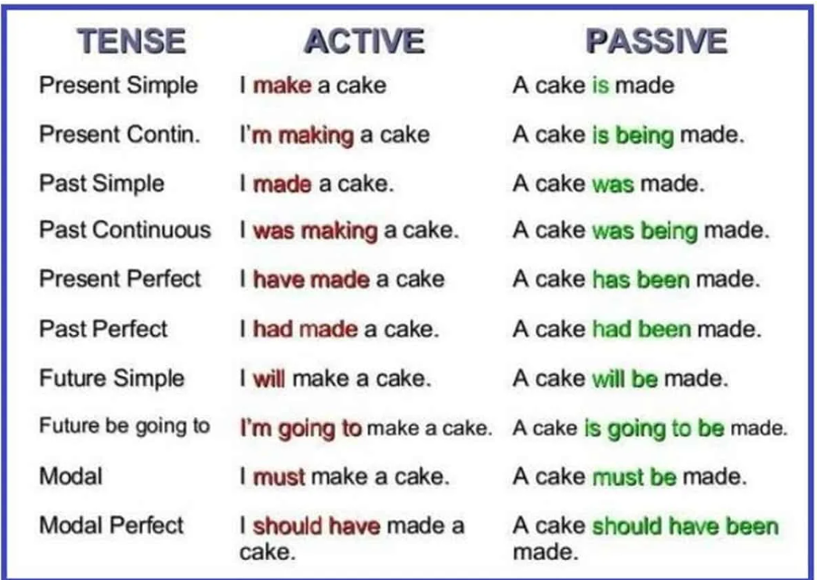
Passive voice across tenses
As we see in these examples, the passive voice places the object of
the action in the position of the subject, relegating the agent to the
predicate. The passive voice therefore emphasizes the product of an
action, and deemphasizes the agent. For this reason, we often use the
passive to describe fabrication, scientific and engineering processes.
Passive voice is commonly employed in scientific writing.
We also see in fig. 8.1 that passive voice always contains
a) some for of the verb BE and b) a past participle (3rd form of the
principal verb: see fig. 3.3 for more information).
The verb BE occupies the position of the principal verb in the original
active sentence.
To mention the agent of the action (the original subject) in a
passive sentence, use the preposition by.
Example:
The electric light bulb was invented by Thomas Edison.
There is a common sense limit to the passive voice. Since the passive
voice involves a swapping of the agent and the object of the action, it
follows logically that it can only be applied to transitive verbs, that
is, verbs that use both an agent and an object. Examples of transitive
verbs include make, eat, buy, give and many more. They are
transitive because we typically make, eat, buy and give
something. Intransitive verbs, on the other hand, do not have
an object, which is why it is impossible to use passive voice on
conjugations such as I slept peacefully or She meditated
for an hour. For more information about transitive and intransitive
verbs, see 7.1.0.1.
TRANSFORMATION RULES
Switch the object and the subject of the sentence
Replace the principal verb with the verb "BE" in the same tense (is?
are? was? were? be? been?)
Add the past participle form of the original principal verb
Check that the conjugation matches the new subject
How to turn active into passive
More examples:
Active
Passive
Kids buy toys
Toys are bought by kids
One lucky kid bought those toys
Those toys were bought by one lucky
kid
They will sell computers
Computers will be sold by them
Young people are creating the
future
The future is being created by young
people
Opel has never made a sports car
A sports car has never been made by
Opel
Dogs can eat worms
Worms can be eaten by dogs
The police must catch the criminals
Criminals must be caught by the
police
•
Pronouns
The function of a pronoun is to replace a noun or noun phrase. A
group of individuals speaking can be replaced by We; a woman
can be referenced as she and an object can be referred to as
it. This form can change depending on whether the pronoun is
the subject of the sentence or an object, or whether it replaces a
possessive phrase.
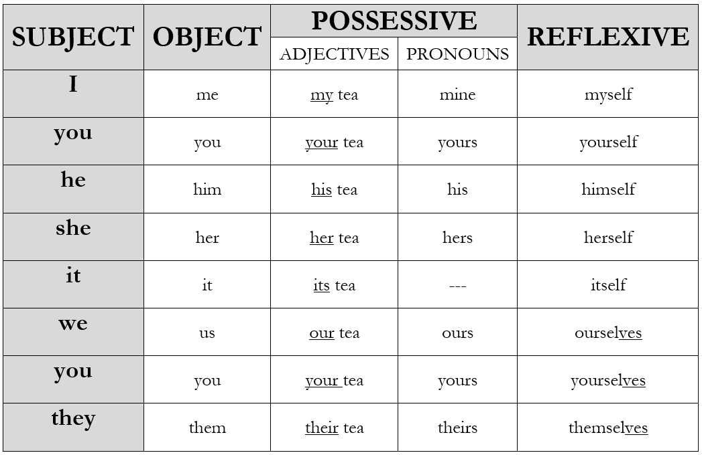
The English pronouns
Table of pronouns
This table of pronouns might seem like a lot of information, but it
is actually much simpler than the equivalent tables in French and
German. The subject and object pronouns are easy to memorize and their
use is straightforward.
refers to incorrect choice of a subject or object pronoun resulting
from insufficient memorization or practice. refers to the incorrect
inclusion of an apostrophe or single quote in the possessive adjective
its. It is incorrect, for example, to
write The house façade lost it’s color. The fact that its is a possessive adjective does not entail
the use of possessive ’s (discussed in chapter 12).
Other errors involve conceptual differences between English on the
one hand and French, German or Italian on the other. They are dicussed
in the following sections.
No gender for objects
Unlike other European languages, English does not apply a gender
(masculine or feminine) to objects such as cars, houses, trees and
everything else. We always use it to
refer to such objects. It is a common error to use a masculine or
feminine pronoun to refer to a thing.
Do not use a masculine (he, him, his) or feminine (she, her) pronoun
in reference to a thing. These pronous are reserved for men and women.
In English, objects have no gender; it would be wrong to describe a car
as ’she’ or a computer as ’he’.
Use the pronoun it when referring to objects.
Possessive adjectives and
pronouns
The possessive pronouns are mine, yours, his,
hers, ours, and theirs. These pronouns replace a possessive noun
phrase such as John’s car or the company’s budget.
my, your, his, her, its, our and your
are technically not pronouns. They are actually possessive adjectives,
because they modify the noun rather than replace it: my car, your
money, his life, her music, our future.
Using possessive pronouns and adjectives can be difficult due to an
important difference between English on the one hand and French and
Italian on the other. This difference involves the third person singular
possessive adjectives and pronouns, i.e. his, her(s) and
its.
In English, the gender of the possessive adjective or pronoun (his,
her(s), its) is determined by the owner, i.e. the possessing agent.
John is a man with a computer and a house. His computer is new. His
house is old.
Mary is a woman with a computer and a house. Her computer is old. Her
house is new.
You can see that the adjective is always his when John is the owner, and her when Mary is the owner.
French works differently. In French, the gender of the pronoun comes
not from the owner, but from the gender of the object itself:
Jean est un homme. Son ordinateur est nouveau, mais sa maison est
vieille.
Marie est une femme. Son ordinatuer est nouveau, mais sa maison est
nouvelle.
As you can see, the adjective changes from son to
sa as a function of the gender of the object. The adjective
does not tell us anything about the gender of the owner.
This difference often leads to confusion in the use of possessive
adjectives and pronouns.
Review the
possessive adjectives and pronouns, and understand the difference
between English and French with regard to possessives.
A FRIEND OF MINE
The expression A friend of + possessive
pronoun is often used incorrectly. An similar expression exists
in French, but it uses an object pronoun: C’est un ami à moi.
This expression cannot be translated word by word into English.
Rule: The expression A friend of requires the use of a possessive
pronoun (mine, yours, hers, his, ours, theirs), not an object
pronoun
refers to the incorrect use of an object pronoun with A friend of, such as A friend of me.
Reflexive pronouns
Reflexive pronouns are needed when a subject pronoun and an object
pronoun are used in the same sentence in refernce to the same person.
Example:
I see myself in the mirror. He doesn’t ask himself why he does
what he does.
results from not using a reflexive pronoun to describe a reflexive
action. Avoid, for example, saying I bought
me a new phone. The cause behind this error is often simply
a lack of practice with reflexive pronouns.
Reflexive vs non-reflexive
verbs
Unfortunately, some verbs are reflexive in French or German but not
in English. One such case is remember. Notice how the English
translation differs from French and German in not being reflexive:
English
French
German
I remember it
je m’en souviens
Ich erinnere mich daran
I feel good
je me sens bien
Ich fühle mich gut
It is therefore an error to add the pronoun myself or even
me after remember in the following way: I remember me well that we have a quiz next
week.
A small but
important number of verbs are not reflexive in English despite being
reflexive in French and/or German. Do not use reflexive pronouns with
the verbs in fig. ref
English
(non-reflexive)
French (reflexive)
German
remember
se souvenir
sich erinnern
feel
se sentir
sich fühlen
rest
se reposer
sich ausruhen
walk
se promener
spazieren gehen
wake up
se réveiller
aufwachen
go to bed
se coucher
ins Bett gehen
shave
se raser
sich rasieren
realize
se rendre compte
erkennen
relax
se détendre
sich entspannen
argue
se disputer
sich streiten
Verbs that are reflexive in French/German but not
English
English uses reflexive pronouns less often than French because it has
other ways of giving verbs a reflexive meaning. One of these is the verb
get, as shown below.
English
French
German
get married
se marier
sich heiraten
get ready
se préparer
sich vorbereiten
get angry
se fâcher
sich ärgern
get up
se lever
aufstehen
get dressed
s’habiller
sich anziehen
Reflexivity can also be suggested by a preposition: se maquiller
= put on makeup.
The verb get can h ave a variety of meanings depending on the
context. As we have seen in this section, it can have a reflexive
meaning related to the idea of becoming. Here are the main
meanings of get:
become:She’s recovering well,
getting stronger every day.
receive:I got your message. Did
you get my letter?
bring, fetch:Can you get me a
dessert from the supermarket?
understand:I don’t get the
exercise. Do you get it?
enter/leave:Get in quick! Get out
now! Get on that bus.
The meanings of get
Relative pronouns
There is actually an additional set of pronouns not mentioned in
figure 9.1.
The relative pronouns who, which, that and
whose have the job of replacing an already-mentioned noun at the
beginning of a new clause that gives further information. Relative
pronouns help us avoid repetitions of this sort:
Michael is a determined character. Michael doesn’t take no for an
answer.
Instead of repeating Michael, we can connect both sentences
using a relative pronoun.
Michael is a determined character who doesn’t take no for an
answer.
In this second example, who is the
relative pronoun replacing Michael and heading the relative
clause who doesn’t take no for an answer.
Relative clauses provide further information about a person or thing
already identified in the main clause.
English grammar has simple rules for the use of relative
pronouns.
THAT
That is the most flexible of the
relative pronouns. You can use that to
refer to both people and objects, and even with times:
refer to people: One man that revolutionized marketing was Steve
Jobs.
refer to things: Many frog species only live on trees that are
only found in this part of the jungle.
with the day, the year, the time: 1983 was the year that
they got married; The bungee jump was the only time that I feared for my
life.
WHO
This relative pronoun is used exclusively with persons or with
personified entities such as teams or companies.
The teacher who helped me had never been kind to me
before.
Be careful not to mistake English who
for French où.
WHICH
We use which exclusively to refer to
things: This is an insult which I will not soon forget. In this
example, ’which’ can and often is replaced by ’that’, with no difference
in meaning. However, the use of which is obligatory when the clause is
non-defining, as in this example: "Cattle-related emmissions, which
is the second biggest source of air pollution, is rarely
discussed."
Do not use who to refer to objects.
Who is used exclusively to refer to
people.
We typically use that or which as
relative pronouns for objects.
Rule: You can leave out who/that/which
when they are the object of the verb in the relative clause. You can
say:
That’s the man who I wanted to see OR That’s the man I
wanted to see
Have you found the keys that you lost? OR Have you found
the keys you lost?
Is there anything that I can do? OR Is there anything I
can do?
WHOSE
Whose replaces a possessive adjective such as her or
his: She is the engineer whose research I told you
about. (whose replaces ’her’ research).
refers to the inability to use the relative pronoun whose correctly.
Prepositions
Movement
With verbs that denote movement, use the preposition to:
I often go to the market
Last summer I went to India
I will fly to Spain next year
We were driving to the stadium
I ran all the way to Tafers
Notice the difference between I travelled to India, which
means ’I made the trip from Switzerland to India’, and I travelled
in India, which means ’I moved around in India’.
Rule: In general, use the preposition
to with verbs that describe movement to a
destination
Home is a special case. The word home as a destination is used without a
preposition. We say go home; come home, not go to home.
Do not use the preposition IN
when describing a movement from one place to another. The preposition to
use with verbs like go, drive, walk, run, fly and travel is
to
Last summer I went to
France with my sister. not went in
France
Time
You should memorize the following rules:
AT
We use at with ’night’ and the hours
of the clock:
I love to read at night
I have a meeting at 12 o’clock
ON
We use on with days of the week and
dates:
I was born on May 12th, 1976
The course takes place on Thursdays
IN
We use in with ’the morning’, ’the
afternoon’, and longer periods (months, seasons, years, decades,
centuries):
I have a meeting in the afternoon
I have a week off in July
I like picking mushrooms in Autumn
I was born in 1999; He lived in the 1960s
The Roman empire expanded in the 2nd century BC
BY
We use by with deadlines: Please
finish this activity by 5 pm tomorrow. In this example, by has a meaning similar to before.
refers to the incorrect choice of time preposition.
Purpose
The purpose of an action refers to its objective, intention, aim or
reason for being. English offers two basic options for expressions of
purpose:
I bought a car to drive to work
Supercars are made for driving in a racetrack
to + infinitive is used in most cases,
especially when then aim or objective is specific: I came here to
fight with the Fremen (this is the specific objective). We use
for + gerund when describing the function
of a tool or object in general: These machines are for training
only.
The most important thing to remember is that the combination of for + infinitive is not allowed in English. It
is a very common error, especially among Italian speakers, to say for go or for check.
Never use for in combination with
gerund (-ing): The probe is used for
check the power level. Your options are to + infinitive or for
+ gerund.
The probe is used to
check the power level; The probe is used for checking the power
level.
Future clauses
A few prepositions introduce a subordinate clause, that is, a subject
+ verb, to provide information about time or other conditions.
when I return
after I arrived
before you call
as soon as you return
in case we miss the flight
until I succeed
These subordinate clauses remain in the present tense even when the
main clause is in a future tense. Examples:
I will call you as soon as I have the chance not as soon as I will have the chance
We will keep trying until we succeed not until we will succeed
Please inform us when the transaction is complete not when the transaction will be
complete
Rule: Do not use the future twice in a
sentence. Time clauses are conjugated in the present tense when the main
clause is in a future tense.
refers to the incorrect use of future tense in a time clause.
Collocations
Many verbs and adjectives are complemented by a specific preposition.
These word combinations are called collocations. Some important
collocations to remember are:
depend on: I depend on my parents for financial support.
look at: Look at that bird. It’s so beautiful!
interested in: I’m very interested in rock art.
participate in: I will not participate in the event.
good / bad / great / terrible at: I must admit, I’m terrible at
telling jokes.
responsible for: “George is responsible for international
sales.
similar to: The new Opera House is similar to the MOMA
building.
different from / different to: This is different from anything
I’ve seen before.
protect from: Shutters protect windows from wind and
rain.
refers to an incorrect collocation, that is the incorrect combination
of a verb or adjective with a preposition.
The most frequent collocation errors are probably depend of, interested of, responsible of and participate to.
Verb complements
A verb complement is a verb that serves as an object to another verb,
to a preposition or adjective. - I enjoy swimming - I don’t go hiking -
I promise to call
The verb complement is not part of a conjugation.
Verb complements can appear in either infinitive or gerund (-ing)
form. RULE: The verb complement is not part of the conjugated verb. For
this reason, if the verb is conjugated in the past tense, the verb
complement remains in the infinitive or gerund. Example: Say: “He wanted
to go”, not “He wanted to went”. Say “She decided to leave”, not “She
decided to left” When to use gerund (-ing) • as a complement to certain
verbs (see point 11.2 below) • after prepositions (incl. phrasal verbs
like give up) = give up smoking; relax after eating; instead of walking
• as the subject of a sentence = Eating out is quite cheap here. /
Surfing is dangerous. When to use to + infinitive • as a complement to
certain verbs (see point 11.3 below) • after adjectives = My flat is
easy to find. • to express reason or purpose = I’m saving money to buy a
car. When to use infinitive (without to) • as a complement to the verbs
make, let, and help: o Please let me go. o She makes me laugh. o Help me
find the solution!
Verbs
complemented by either -ing OR infinitive with no change in meaning
not bear begin continue hate like love prefer start
avoid can’t help (=can’t stop) can’t stand consider deny dislike
enjoy finish imagine keep (=continue) mind practice stop suggest
Verbs
followed by -ing or infinitive with a change in meaning.
remember a) "future obligation": I must remember to call my sister.
b) "memory": I will always remember meeting Lebron James.
forget a) "future obligation": I must not forget to pay my taxes. b)
"memory": I will never forget flying an F18.
mean a) "intend": We mean to buy a house this year. I didn’t mean to
hurt you. b) "signify": Being an engineering student means working 45
hours/week.
stop a) "stop with a purpose": I have to stop to buy milk. >>
good roommate b) "interrupt an activity" : Please stop buying milk.
>> you buy too much milk
try a) "make an effort": Try to work a little harder. b) "experiment
with a new solution": Have you tried using salt?
how to make a negative
verb complement
Giving orders and
instructions
When giving instructions or making requests, an indirect object
(who?) can be placed between a verb and a verb complement. Consider the
following examples: She ordered me to do it. I want you to stay. I told
him to get out. I asked her to write more often I begged him not to
forget.
Two important expressions
• Use -ing with the frequently used expression “I look forward to…”:
I look forward to meeting you! • Use -ing with the frequently used
expression “be used to…” or “get used to…”: I am used to getting up
early; I got used to wearing a tie every day. Not *I’m used to get up
early.
Possessive ’s
This chapter discusses the correct way to use possessive -’s. In this
context, the single quote symbol (’) is called an apostrophe (pronounced /a-POS-tro-fee/). You
can refer to possessive ’s as apostrophe s.
We use ’s to indicate the things that
people possess as well as their attributes:
My wife’s car
The president’s schedule
Melinda’s smile
In general, the use of possessive -s for people’s possessions is
required, not optional.
Avoid using of to describe people’s
possessions or attributes: the car of John,
the sister of Mary, the smile of Melinda
Use possessive ’s:
John’s car, Mary’s sister, Melinda’s smile
Possessive ’s is also used with names that end in -s:
Are you going to Mr. Jones’s farewell party?
Have you seen Chris’s dog?
The repetition of an ’s’ at the end of the word is not problematic:
to pronounce the possessive ’s’, say /iz/. Chris’s is
pronounced /KRIS-iz/.
Though rare, it is possible to make chains of two possessive ’s :
Chris’s girlfriend’s car
However, there are common sense limits to the use of possessive -’s
for people. For instance, we would not use possessive -s following a
relative clause: Here is the man who phoned
you’s number. In this case it is obviously preferable to
say:
Here is the number of the man who phoned you.
We use also ’s with groups of people,
such as companies, organizations, associations, teams, countries, and
cities:
Nestle’s headquarters
Fribourg’s old town
Brazil’s exports
the HEG’s budget
It is also possible to use ’s for the
attributes of things, though it is not required. In fact, when
describing the attibures of things, the use of of is probably more common than possessive
’s.
The planet’s rings is fine, but so is the rings of the
planet
The building’s location is fine, but so is the location
of the building
The screen’s resolution is fine, but so is the
resolution of the screen
Keep in mind, however, that it is often possible (and desirable) to
omit the possessive in favor of a compound noun. As explained in 1.9,
compound nouns are often a more elegant solution than possessive ’s or
prepositions.
the book cover is often better than ’the book’s cover’ or
’the cover of the book’
the computer screen is often better than ’the computer’s
screen’ or ’the screen of the computer’
tourist guide is better than ’tourists’ guide’ or ’the guide
for tourists’
Sometimes the preposition of is
considered to ’sound better’. For example, most people would probably
agree theat the phrase ’The sound of rain’ sounds better than ’rain’s
sound’ (due to the relative difficulty of saying the two ’s’ sounds in
’rain’s sound’). For this and other reasons, of is often used in book titles, slogans, and
idioms.
In the end, choosing between of and
possessive ’s in these cases is often a stylistic question of rhythm and
sound.
We also commonly use -’s with time expressions:
Next week’s meeting is cancelled
Do you have yesterday’s newspaper?
I will see you in three weeks’ time!
Finally, when the possessing subject is a plural noun ending in -s,
we just add an apostrophe (no need for an ’s’).
my friends’ house (a house belonging to more than one friend)
the players’ equipment (equipment belonging to more than one
player)
refers to an unusual or unnatural use of possessive ’s.
Special uses of auxiliaries
Auxiliary verbs are essential components of sentence construction. As
we saw in chapters 3 and 4, auxiliaries coordinate the subject of the
sentence with the action (the verb) in the predicate.
This chapter focuses on other uses of auxiliary verbs in English
communication. When repeated at the end of the sentence, auxiliary verbs
serve as kind of abbreviation or quick reference to the entire
conjugated verb, enabling a variety of expressive actions such as asking
for confirmation, showing interest or doubt, and agreeing.
Using the auxiliary verb in these ways is considered an advanced
English language skill, not because of any inherent complexity, but
because it shows that the speaker is capable of nuanced and interactive
communication.
Polite short answers
Instead of answering with a bare yes or no, it is
more polite to repeat the auxiliary verb corresponding to the tense in
the question:
- Are you happy? - Yes, I am.
- WIll you marry me? - No, I won’t.
- Do you like it? - Yes, I do.
When answering a
yes or no question, the polite thing to do is to repeat the auxiliary
verb: - Do you want to join us? - Yes, I do!
Avoid repeating information
Repeating the auxiliary verb is a clear enough reference to the
conjugated verb, making it unnecessary to restate the entire
conjugation:
I like dogs but my husband doesn’t.
My wife will not be able to attend, but I will.
John can speak French fluently and his daughter can too.
Showing interest (echo
questions)
To show an interest in what your interlocutor is saying, we form a
short question using the auxiliary verb from the interlocutor’s sentence
and a subject pronoun.
I love football.
Do you? Who’s your favorite team?
I spent 2 years in the Amazon rainforst.
Did you? Wow, it must have been special.
Do you? and Did you? are examples of echo questions that show an interest in the
interlocutor’s statement.
Echo questions can also be used to express skepticisim or doubt.
We should buy a puppy for the kids.
Should we, really? Who’s going to take it out on walks?
Agreeing (with “so” and
“neither”)
You can agree with your interlocutor by saying me too (for
positive statements) or me neither (if you agree on a negative
statement). You can also do this by using so +
auxiliary + pronoun or neither +
auxiliary + pronoun.
I like Mexican food.
So do I.
I can’t swim.
Neither can I! We’re soulmates.
Tag questions
Tag questions are similar to echo questions, the only difference
being that the ’sign’ of the conjugation changes. Positive or
declarative conjugations are changed to negatives, and negatives are
changed to positives.
We’ve been here before, haven’t we?
You broke it, didn’t you?
Oh dear. We’re lost, aren’t we?
The effect of changing the sign in this way is to express a slight
doubt that invites confirmation, much like the French tag questions
n’est-ce pas? or ou bien?, or the German
oder?. Using them makes your interlocutor feel involved in the
conversation.
Tag questions are often rhetorical, however, which means that an
actual answer is not expected: Lovely day, isn’t it? Very
often, the point of using a tag question is not to get a specific
confirmation, but simply to signal an openness to interaction.
Be careful with the following irregular tags:
I’m bad at cooking, aren’t I?
Don’t be late, will you? >> Imperative
Let’s go out, shall we?
Incorrect
application of an irregular verb to express interest, skepticism,
agreement or as a tag
Pronunciation
This chapter presents the most common pronunciation errors for native
speakers of French in particular, but also German and Italian.
Stress the first syllable
Most English words are stressed i nthe first syllable.
Words that are not include
this contrasts sharply with French, in which the last syllable is
always stressed: /mai-SON/, /ve-ri-TE/, /bien-TOT/,
/com-prehen-SION/
Placing the stress in the right place often unlocks or makes it
easier to pronounce the rest of the word correctly. words like
error 1400
-s endings
French speakers: do not forget to pronounce plural “-s”! This is
without a doubt the most common and consistent speaking error that
French speakers make.
Apples, friends, some machines, several computers
I know it is difficult to remember, and it may seem like a trivial
problem, a little detail... but it isn’t! English speakers will think
that you do not know the basic plural form! So please, try to focus on
this. It makes a big difference!
The same applies to 3rd person conjugations in the present simple,
which also have an “-s” ending:
she runs, he jumps, it swims, she checks, he flips, it breaks...
, as explained in section 1.1, is the very common problem of forgetting
to write or say a plural -s ending.
refers to a similar problem in connection with 3rd personal present
simple conjugations, which require an -s ending.
-es endings
As explained in 1.1.1.2 When a word ends in
-x, -ss, -sh, -ch, -ge, or -ce, it is not possible to add the normal -s
ending of the plural or 3rd person singular form. The problem is that it
is impossible to distinguish an -s after -ss, -x, -sh, etc.
In these cases, the ending changes to “-es”, which is pronounced
/iz/.
Many students find it difficult to say /iz/ after -x, -ss, -sh, -ch,
-ge and -ce. This common error is known as .
-ed verb endings
Past simple and past participle verbs often have an -ed ending:
jumped, screamed, dragged, checked, fixed, missed, etc.
These -ed endings are pronounced /d/, not /id/ or /eeed/.
Verb
Correct
pronunciation
Incorrect
pronunciation
jumped
/jumpd/
/jumpeeed/
screamed
/screamd/
/screameeed/
dragged
/draggd/
/draggeeed/
checked
/checkd/
/checkeeeed/
fixed
/fixd/
/fixeeeed/
missed
/missd/
/misseeed/
managed
/manajd/
/manageeed/
faced
/feissd/
/feisseeed/
refers to the incorrect pronounciation of a -ed ending not as /d/
(correct), but as /id/ or /eeed/ (incorrect).
There is one important exception to this rule: verbs ending in -t or
-d, such as print and decide. For obvious phonetic reasons, it is nearly
impossible to distinguish a /d/ sound from another /d/ or /t/ sound.
This is why we need to say /id/ or /eeed/ in these cases, creating a
separation between the two identical consonants.
Verb
Correct
pronunciation
descended
/descendeeed/
folded
/foldeeed/
decided
/decideeed/
invented
/inventeeed/
printed
/printeeed/
invited
/inviteeed/
united
/uniteeed/
Failing to pronounce -ed endings correctly with verbs ending in -t or
-d results in the following error. refers to the incorrect
pronounciation of -ed after words ending in -d or -t, usually resulting
in the -ed ending being indistinguishable or completely dropped. This pronunciation error is typical
when using two types of words:
The past forms of verbs ending in -d, -de, -t or -te, including
descend, fold, decide, reside, invent, manifest, print, allocate,
invite, manipulate, originate, unite, etc.
Adjectives ending in -ated, such as complicated and
eliminated, which are often incorrectly pronounced it’s very
complicate or they were
eliminate.
-ght endings
-ght endings are actually quite simple once you understand the rule.
In modern English, -ght is pronounced /t/. You can and should forget the
letters g and h, as they are silent in these endings.
Rule: -ght endings are simply
pronounced /t/
It is important to remember this rule, because the ending occurs in
the past form of several irregular verbs, including:
Verb
Correct
pronunciation
bought
/bott/
thought
/thott/
brought
/brott/
fought
/fott/
taught
/tott/
caught
/cott/
sought
/sott/
I doubled the -t in the phonetic transcription to emphasize the fact
that -ght is reduced to a flat -t sound. Notice also how the -ou- and
-au- sounds in the middle of these past forms make a single /o/ or
perhaps /ah/ sound. Avoid pronouncing these vowels as dipthongs /a-u/ or
/o-u/.
The same pronunciation of -ght applies in the words height
(/hait/) and weight (/weit/), which are basic terms for
engineers and architects.
refers to the incorrect pronounciation of -ght endings.
-gh endings
-gh word endings are unpredictable. Sometimes they are completely
silent (unpronounced):
dough (pâte), although (bien que), through (à travers), borough
(quartier) /doe/ /aldoe/ /doe/ /boroe/
There is no clear rule when it comes to -gh endings. The best thing
to do is to familiarize oneself with these particular words.
refers to the incorrect pronounciation of -gh endings.
h- at the beginning of words
As explained in section ref, an “h” at the beginning of a word has to
be pronounced. The sound is that of a short exhalation.
hotel, heat, hit, home, etc.
If you are a French speaker, this will not be easy for you to
pronouce. Practice making a “g” sound at the begining of the word, like
“gotel” or “gome”, then slowly replace the “g” with an exhalation.
Since “h” is a real consonant, we do not make a liaison between the
article and the beginning of a word that starts with “h”:
Don’t say “an ôtel”. Say “a hotel”. Or: “a *pause* hotel” Don’t say
“an ôme”. Say “a home”. Or: “a *pause* home” refers to the incorrect
pronounciation of h- at the beginning of words.
kn- at the beginning of
words
The “k” at the beginning of a word starting with “kn-“ is usualy
silent.
knee is pronounced /nee/ knowledge is pronounced /noeledge/ refers to
the incorrect pronounciation of kn-.
The palatal nasal sound
In French and Italian, in the words “agneau” or “bagno”, for example,
the letters “-gn-“ make a nasal sound. Other languages represent this
sound with “nh“ or “ñ”: "Pontinha", "mañana".
This sound does not exist in English. It is a mistake to make this
sound when you say words like:
magnet magnesium signal magnolia signature agnostic ignition
ignore
In these and other words containing “-gn-“, the “g” sound is hard, as
in “go” or “game”.
refers to the incorrect pronounciation of -gn-.
Sometimes, as in the word sign, design, foreign, and campaign, the
“g” is not pronounced at all. You have to make a pure “n” sound: /sine/
/desine/ /foren/ /campain/
The ’qu’ phoneme
This phoneme is pronounced /kw/ in English (and is similar to German
pronunciation), whereas in French it is pronounced /k/. Examples:
• quality should be pronounced /kwality/ • quantity should be
pronounced /kwantity/ • aqueduct should be pronounced /akweduct/ • quit
should be pronounecd /kwit/ • equal should be pronounced /ekwal/
refers to the incorrect pronounciation of -qu-.
ch- at the beginning of
words
The phoneme ch- at the beginning of the word is not the same as sh-.
From the perspective of a French speaker, ch- should sound like /tch-/
or /tsh-/. Examples: - cheap should be pronounced /tcheap/. If not, it
will sound like sheep (the animal) - choose should be pronounced
/tchoose/. If not, it will sound like shoes. refers to the incorrect
pronounciation of ch-.
ci- and ce- for Italian
speakers
refers to the incorrect pronounciation of -ce- or -ci- by
Italian-speakers.
Common vocabulary errors
Errors are often in specialized vocabulary particular to every
profession or areac of activity. But some errors are general to all
learners, mainly caused by transfer from the native language.
Common false friends
Other common errors
News is particularly hard to use correctly since it is
both a singular word ending in -s and an uncountable word.↩︎
"Data" can be used with a plural conjugation. It is
acceptable to say Data are being collected, for example.↩︎
In British English it is acceptable and common to make a
liaision between an and the word history or
historical: an historical monument.↩︎
This is just a rule of thumb or practical guideline.
There are of course other cases where present perfect would be
correct.↩︎
 Do not forget to
say the plural -s. Make a focused effort to pronounce -s endings clearly
and consistently. It should be one of your top priorities whenever you
do an English oral presentation. This error might seem trivial and
unimportant, but it has a big impact on the quality of your
communication.
Do not forget to
say the plural -s. Make a focused effort to pronounce -s endings clearly
and consistently. It should be one of your top priorities whenever you
do an English oral presentation. This error might seem trivial and
unimportant, but it has a big impact on the quality of your
communication.